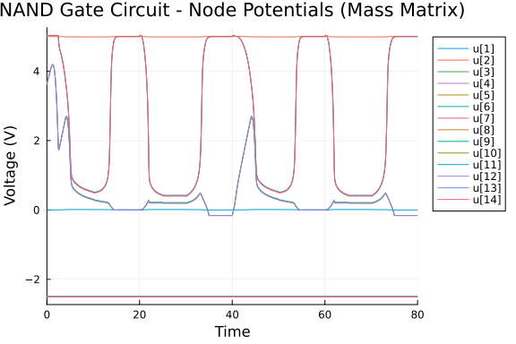
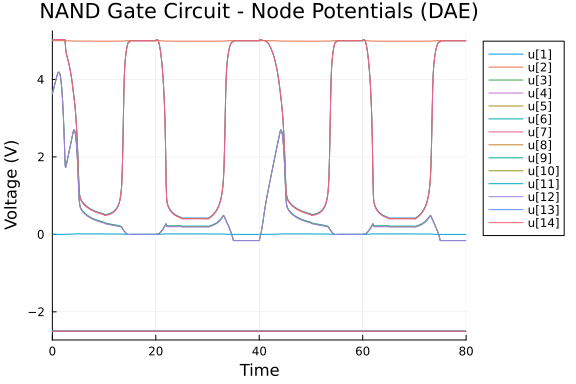
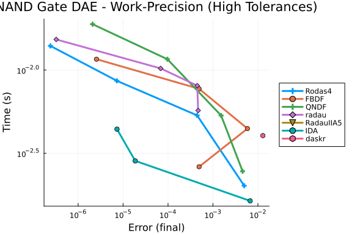
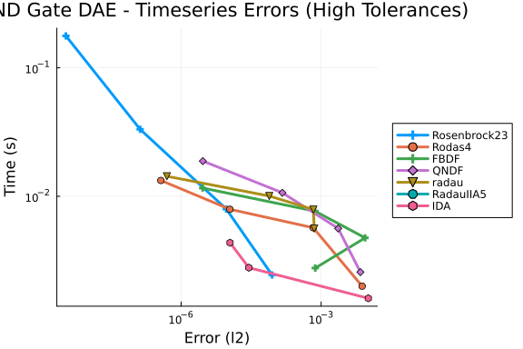
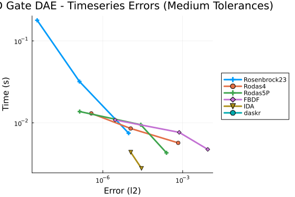
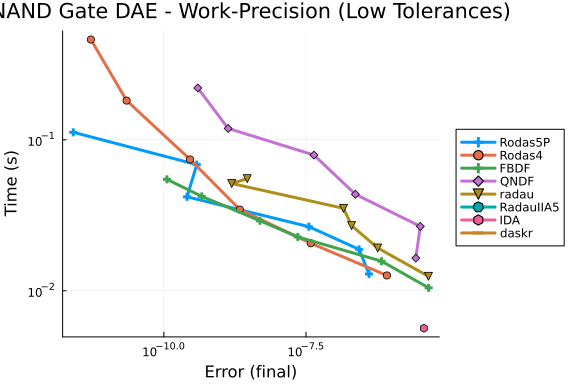
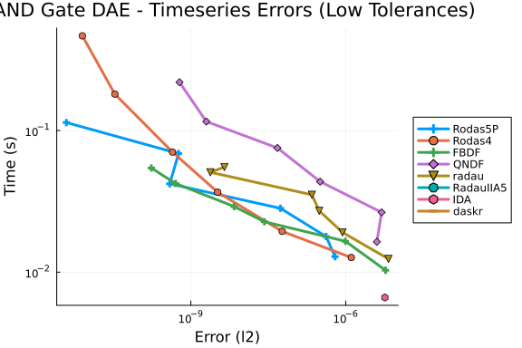
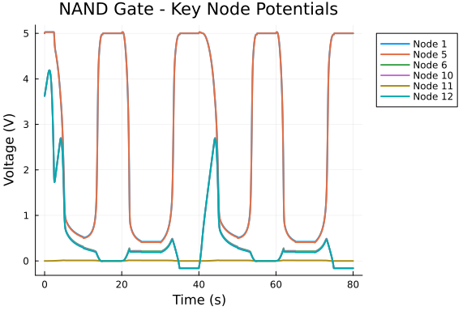

NAND Gate Differential-Algebraic Equation (DAE) Work-Precision Diagrams
using OrdinaryDiffEq, DiffEqDevTools, ModelingToolkit, ODEInterfaceDiffEq,
Plots, Sundials, DASSL, DASKR
using LinearAlgebra
using ModelingToolkit: t_nounits as t, D_nounits as DProblem Parameters
const RGS = 4.0
const RGD = 4.0
const RBS = 10.0
const RBD = 10.0
const CGS = 6e-5
const CGD = 6e-5
const CBD = 2.4e-5
const CBS = 2.4e-5
const C9 = 5e-5
const DELTA = 0.02
const CURIS = 1e-14
const VTH = 25.85
const VDD = 5.0
const VBB = -2.5
const VT0_DEPL = -2.43
const CGAMMA_DEPL = 0.2
const PHI_DEPL = 1.28
const BETA_DEPL = 5.35e-4
const VT0_ENH = 0.2
const CGAMMA_ENH = 0.035
const PHI_ENH = 1.01
const BETA_ENH = 1.748e-30.001748Input Signal Functions
function pulse(t, t_start, v_low, t_rise, v_high, t_high, t_fall, t_period)
t_mod = mod(t, t_period)
if t_mod < t_start
return v_low
elseif t_mod < t_start + t_rise
return v_low + (v_high - v_low) * (t_mod - t_start) / t_rise
elseif t_mod < t_start + t_rise + t_high
return v_high
elseif t_mod < t_start + t_rise + t_high + t_fall
return v_high - (v_high - v_low) * (t_mod - t_start - t_rise - t_high) / t_fall
else
return v_low
end
end
V1(t) = pulse(t, 0.0, 0.0, 5.0, 5.0, 5.0, 5.0, 20.0)
V2(t) = pulse(t, 0.0, 0.0, 15.0, 5.0, 15.0, 5.0, 40.0)
function V1_derivative(t)
t_mod = mod(t, 20.0)
if 0.0 < t_mod < 5.0
return 1.0
elseif 10.0 < t_mod < 15.0
return -1.0
else
return 0.0
end
end
function V2_derivative(t)
t_mod = mod(t, 40.0)
if 0.0 < t_mod < 15.0
return 1.0/15.0
elseif 20.0 < t_mod < 35.0
return -1.0/15.0
else
return 0.0
end
endV2_derivative (generic function with 1 method)MOSFET Model Functions
function gdsp(ned, vds, vgs, vbs)
if ned == 1
vt0, cgamma, phi, beta = VT0_DEPL, CGAMMA_DEPL, PHI_DEPL, BETA_DEPL
else
vt0, cgamma, phi, beta = VT0_ENH, CGAMMA_ENH, PHI_ENH, BETA_ENH
end
phi_vbs = max(phi - vbs, 1e-12)
phi_safe = max(phi, 1e-12)
vte = vt0 + cgamma * (sqrt(phi_vbs) - sqrt(phi_safe))
if vgs - vte <= 0.0
return 0.0
elseif 0.0 < vgs - vte <= vds
return -beta * (vgs - vte)^2 * (1.0 + DELTA * vds)
elseif 0.0 < vds < vgs - vte
return -beta * vds * (2.0 * (vgs - vte) - vds) * (1.0 + DELTA * vds)
else
return 0.0
end
end
function gdsm(ned, vds, vgd, vbd)
if ned == 1
vt0, cgamma, phi, beta = VT0_DEPL, CGAMMA_DEPL, PHI_DEPL, BETA_DEPL
else
vt0, cgamma, phi, beta = VT0_ENH, CGAMMA_ENH, PHI_ENH, BETA_ENH
end
phi_vbd = max(phi - vbd, 1e-12)
phi_safe = max(phi, 1e-12)
vte = vt0 + cgamma * (sqrt(phi_vbd) - sqrt(phi_safe))
if vgd - vte <= 0.0
return 0.0
elseif 0.0 < vgd - vte <= -vds
return beta * (vgd - vte)^2 * (1.0 - DELTA * vds)
elseif 0.0 < -vds < vgd - vte
return -beta * vds * (2.0 * (vgd - vte) + vds) * (1.0 - DELTA * vds)
else
return 0.0
end
end
function ids(ned, vds, vgs, vbs, vgd, vbd)
if vds > 0.0
return gdsp(ned, vds, vgs, vbs)
elseif vds == 0.0
return 0.0
else
return gdsm(ned, vds, vgd, vbd)
end
end
function ibs(vbs)
if vbs <= 0.0
return -CURIS * (exp(vbs / VTH) - 1.0)
else
return 0.0
end
end
function ibd(vbd)
if vbd <= 0.0
return -CURIS * (exp(vbd / VTH) - 1.0)
else
return 0.0
end
endibd (generic function with 1 method)DAE System Definition
function nand_rhs!(f, y, p, t)
v1 = V1(t)
v2 = V2(t)
v1d = V1_derivative(t)
v2d = V2_derivative(t)
y1, y2, y3, y4, y5, y6, y7, y8, y9, y10, y11, y12, y13, y14 = y
f[1] = -(y1 - y5) / RGS - ids(1, y2 - y1, y5 - y1, y3 - y5, y5 - y2, y4 - VDD)
f[2] = -(y2 - VDD) / RGD + ids(1, y2 - y1, y5 - y1, y3 - y5, y5 - y2, y4 - VDD)
f[3] = -(y3 - VBB) / RBS + ibs(y3 - y5)
f[4] = -(y4 - VBB) / RBD + ibd(y4 - VDD)
f[5] = -(y5 - y1) / RGS - ibs(y3 - y5) - (y5 - y7) / RGD - ibd(y9 - y5)
f[6] = CGS * v1d - (y6 - y10) / RGS - ids(2, y7 - y6, v1 - y6, y8 - y10, v1 - y7, y9 - y5)
f[7] = CGD * v1d - (y7 - y5) / RGD + ids(2, y7 - y6, v1 - y6, y8 - y10, v1 - y7, y9 - y5)
f[8] = -(y8 - VBB) / RBS + ibs(y8 - y10)
f[9] = -(y9 - VBB) / RBD + ibd(y9 - y5)
f[10] = -(y10 - y6) / RGS - ibs(y8 - y10) - (y10 - y12) / RGD - ibd(y14 - y10)
f[11] = CGS * v2d - y11 / RGS - ids(2, y12 - y11, v2 - y11, y13, v2 - y12, y14 - y10)
f[12] = CGD * v2d - (y12 - y10) / RGD + ids(2, y12 - y11, v2 - y11, y13, v2 - y12, y14 - y10)
f[13] = -(y13 - VBB) / RBS + ibs(y13)
f[14] = -(y14 - VBB) / RBD + ibd(y14 - y10)
return nothing
end
# Mass matrix (singular is fine!)
dirMassMatrix = [
CGS 0 0 0 0 0 0 0 0 0 0 0 0 0
0 CGD 0 0 0 0 0 0 0 0 0 0 0 0
0 0 CBS 0 0 0 0 0 0 0 0 0 0 0
0 0 0 CBD 0 0 0 0 0 0 0 0 0 0
0 0 0 0 0 0 0 0 0 0 0 0 0 0
0 0 0 0 0 CGS 0 0 0 0 0 0 0 0
0 0 0 0 0 0 CGD 0 0 0 0 0 0 0
0 0 0 0 0 0 0 CBS 0 0 0 0 0 0
0 0 0 0 0 0 0 0 CBD 0 0 0 0 0
0 0 0 0 0 0 0 0 0 0 0 0 0 0
0 0 0 0 0 0 0 0 0 0 CGS 0 0 0
0 0 0 0 0 0 0 0 0 0 0 CGD 0 0
0 0 0 0 0 0 0 0 0 0 0 0 CBS 0
0 0 0 0 0 0 0 0 0 0 0 0 0 CBD
]
# Initial conditions
y0 = [5.0, 5.0, VBB, VBB, 5.0, 3.62385, 5.0, VBB, VBB, 3.62385, 0.0, 3.62385, VBB, VBB]
tspan = (0.0, 80.0)
# Mass matrix problem (original approach)
mmf = ODEFunction(nand_rhs!, mass_matrix=dirMassMatrix)
mmprob = ODEProblem(mmf, y0, tspan)
# DAEProblem version using direct DAE formulation
function nand_dae!(out, du, u, p, t)
v1 = V1(t)
v2 = V2(t)
v1d = V1_derivative(t)
v2d = V2_derivative(t)
y1, y2, y3, y4, y5, y6, y7, y8, y9, y10, y11, y12, y13, y14 = u
dy1, dy2, dy3, dy4, dy5, dy6, dy7, dy8, dy9, dy10, dy11, dy12, dy13, dy14 = du
# Differential equations: M*dy/dt - f = 0
# Convert from mass matrix form: M*dy/dt = f => M*dy/dt - f = 0
out[1] = CGS * dy1 - (-(y1 - y5) / RGS - ids(1, y2 - y1, y5 - y1, y3 - y5, y5 - y2, y4 - VDD))
out[2] = CGD * dy2 - (-(y2 - VDD) / RGD + ids(1, y2 - y1, y5 - y1, y3 - y5, y5 - y2, y4 - VDD))
out[3] = CBS * dy3 - (-(y3 - VBB) / RBS + ibs(y3 - y5))
out[4] = CBD * dy4 - (-(y4 - VBB) / RBD + ibd(y4 - VDD))
# Algebraic equations: g(y) = 0
out[5] = -(y5 - y1) / RGS - ibs(y3 - y5) - (y5 - y7) / RGD - ibd(y9 - y5)
out[6] = CGS * dy6 - (CGS * v1d - (y6 - y10) / RGS - ids(2, y7 - y6, v1 - y6, y8 - y10, v1 - y7, y9 - y5))
out[7] = CGD * dy7 - (CGD * v1d - (y7 - y5) / RGD + ids(2, y7 - y6, v1 - y6, y8 - y10, v1 - y7, y9 - y5))
out[8] = CBS * dy8 - (-(y8 - VBB) / RBS + ibs(y8 - y10))
out[9] = CBD * dy9 - (-(y9 - VBB) / RBD + ibd(y9 - y5))
# Algebraic equation: g(y) = 0
out[10] = -(y10 - y6) / RGS - ibs(y8 - y10) - (y10 - y12) / RGD - ibd(y14 - y10)
out[11] = CGS * dy11 - (CGS * v2d - y11 / RGS - ids(2, y12 - y11, v2 - y11, y13, v2 - y12, y14 - y10))
out[12] = CGD * dy12 - (CGD * v2d - (y12 - y10) / RGD + ids(2, y12 - y11, v2 - y11, y13, v2 - y12, y14 - y10))
out[13] = CBS * dy13 - (-(y13 - VBB) / RBS + ibs(y13))
out[14] = CBD * dy14 - (-(y14 - VBB) / RBD + ibd(y14 - y10))
return nothing
end
# Create DAE problem with automatic initialization
# Let IDA determine consistent initial derivatives automatically
du0_dae = zeros(14)
daeprob = DAEProblem(nand_dae!, du0_dae, y0, tspan)
# Generate reference solutions
ref_sol = solve(mmprob, Rodas5P(), abstol=1e-12, reltol=1e-12, tstops=0.0:5.0:80.0)
dae_ref_sol = solve(daeprob, DASKR.daskr(), abstol=1e-10, reltol=1e-10)
probs = [mmprob, daeprob]
refs = [ref_sol, dae_ref_sol]2-element Vector{SciMLBase.AbstractODESolution{Float64, 2, Vector{Vector{Fl
oat64}}}}:
SciMLBase.ODESolution{Float64, 2, Vector{Vector{Float64}}, Nothing, Nothin
g, Vector{Float64}, Vector{Vector{Vector{Float64}}}, Nothing, SciMLBase.ODE
Problem{Vector{Float64}, Tuple{Float64, Float64}, true, SciMLBase.NullParam
eters, SciMLBase.ODEFunction{true, SciMLBase.FullSpecialize, typeof(Main.va
r"##WeaveSandBox#225".nand_rhs!), Matrix{Float64}, Nothing, Nothing, Nothin
g, Nothing, Nothing, Nothing, Nothing, Nothing, Nothing, Nothing, Nothing,
typeof(SciMLBase.DEFAULT_OBSERVED), Nothing, Nothing, Nothing, Nothing}, Ba
se.Pairs{Symbol, Union{}, Tuple{}, @NamedTuple{}}, SciMLBase.StandardODEPro
blem}, OrdinaryDiffEqRosenbrock.Rodas5P{0, ADTypes.AutoForwardDiff{nothing,
ForwardDiff.Tag{DiffEqBase.OrdinaryDiffEqTag, Float64}}, Nothing, typeof(O
rdinaryDiffEqCore.DEFAULT_PRECS), Val{:forward}(), true, nothing, typeof(Or
dinaryDiffEqCore.trivial_limiter!), typeof(OrdinaryDiffEqCore.trivial_limit
er!)}, OrdinaryDiffEqCore.InterpolationData{SciMLBase.ODEFunction{true, Sci
MLBase.FullSpecialize, typeof(Main.var"##WeaveSandBox#225".nand_rhs!), Matr
ix{Float64}, Nothing, Nothing, Nothing, Nothing, Nothing, Nothing, Nothing,
Nothing, Nothing, Nothing, Nothing, typeof(SciMLBase.DEFAULT_OBSERVED), No
thing, Nothing, Nothing, Nothing}, Vector{Vector{Float64}}, Vector{Float64}
, Vector{Vector{Vector{Float64}}}, Nothing, OrdinaryDiffEqRosenbrock.Rosenb
rockCache{Vector{Float64}, Vector{Float64}, Float64, Vector{Float64}, Matri
x{Float64}, Matrix{Float64}, OrdinaryDiffEqRosenbrock.RodasTableau{Float64,
Float64}, SciMLBase.TimeGradientWrapper{true, SciMLBase.ODEFunction{true,
SciMLBase.FullSpecialize, typeof(Main.var"##WeaveSandBox#225".nand_rhs!), M
atrix{Float64}, Nothing, Nothing, Nothing, Nothing, Nothing, Nothing, Nothi
ng, Nothing, Nothing, Nothing, Nothing, typeof(SciMLBase.DEFAULT_OBSERVED),
Nothing, Nothing, Nothing, Nothing}, Vector{Float64}, SciMLBase.NullParame
ters}, SciMLBase.UJacobianWrapper{true, SciMLBase.ODEFunction{true, SciMLBa
se.FullSpecialize, typeof(Main.var"##WeaveSandBox#225".nand_rhs!), Matrix{F
loat64}, Nothing, Nothing, Nothing, Nothing, Nothing, Nothing, Nothing, Not
hing, Nothing, Nothing, Nothing, typeof(SciMLBase.DEFAULT_OBSERVED), Nothin
g, Nothing, Nothing, Nothing}, Float64, SciMLBase.NullParameters}, LinearSo
lve.LinearCache{Matrix{Float64}, Vector{Float64}, Vector{Float64}, SciMLBas
e.NullParameters, LinearSolve.DefaultLinearSolver, LinearSolve.DefaultLinea
rSolverInit{LinearAlgebra.LU{Float64, Matrix{Float64}, Vector{Int64}}, Line
arAlgebra.QRCompactWY{Float64, Matrix{Float64}, Matrix{Float64}}, Nothing,
Nothing, Nothing, Nothing, Nothing, Nothing, Tuple{LinearAlgebra.LU{Float64
, Matrix{Float64}, Vector{Int64}}, Vector{Int64}}, Tuple{LinearAlgebra.LU{F
loat64, Matrix{Float64}, Vector{Int64}}, Vector{Int64}}, Nothing, Nothing,
Nothing, LinearAlgebra.SVD{Float64, Float64, Matrix{Float64}, Vector{Float6
4}}, LinearAlgebra.Cholesky{Float64, Matrix{Float64}}, LinearAlgebra.Choles
ky{Float64, Matrix{Float64}}, Tuple{LinearAlgebra.LU{Float64, Matrix{Float6
4}, Vector{Int32}}, Base.RefValue{Int32}}, Tuple{LinearAlgebra.LU{Float64,
Matrix{Float64}, Vector{Int64}}, Base.RefValue{Int64}}, LinearAlgebra.QRPiv
oted{Float64, Matrix{Float64}, Vector{Float64}, Vector{Int64}}, Nothing, No
thing}, LinearSolve.InvPreconditioner{LinearAlgebra.Diagonal{Float64, Vecto
r{Float64}}}, LinearAlgebra.Diagonal{Float64, Vector{Float64}}, Float64, Bo
ol, LinearSolve.LinearSolveAdjoint{Missing}}, Tuple{DifferentiationInterfac
eForwardDiffExt.ForwardDiffTwoArgJacobianPrep{Nothing, ForwardDiff.Jacobian
Config{ForwardDiff.Tag{DiffEqBase.OrdinaryDiffEqTag, Float64}, Float64, 7,
Tuple{Vector{ForwardDiff.Dual{ForwardDiff.Tag{DiffEqBase.OrdinaryDiffEqTag,
Float64}, Float64, 7}}, Vector{ForwardDiff.Dual{ForwardDiff.Tag{DiffEqBase
.OrdinaryDiffEqTag, Float64}, Float64, 7}}}}, Tuple{}}, DifferentiationInte
rfaceForwardDiffExt.ForwardDiffTwoArgJacobianPrep{Nothing, ForwardDiff.Jaco
bianConfig{ForwardDiff.Tag{DiffEqBase.OrdinaryDiffEqTag, Float64}, Float64,
7, Tuple{Vector{ForwardDiff.Dual{ForwardDiff.Tag{DiffEqBase.OrdinaryDiffEq
Tag, Float64}, Float64, 7}}, Vector{ForwardDiff.Dual{ForwardDiff.Tag{DiffEq
Base.OrdinaryDiffEqTag, Float64}, Float64, 7}}}}, Tuple{}}}, Tuple{Differen
tiationInterfaceForwardDiffExt.ForwardDiffTwoArgDerivativePrep{Nothing, For
wardDiff.DerivativeConfig{ForwardDiff.Tag{DiffEqBase.OrdinaryDiffEqTag, Flo
at64}, Vector{ForwardDiff.Dual{ForwardDiff.Tag{DiffEqBase.OrdinaryDiffEqTag
, Float64}, Float64, 1}}}, Tuple{}}, DifferentiationInterfaceForwardDiffExt
.ForwardDiffTwoArgDerivativePrep{Nothing, ForwardDiff.DerivativeConfig{Forw
ardDiff.Tag{DiffEqBase.OrdinaryDiffEqTag, Float64}, Vector{ForwardDiff.Dual
{ForwardDiff.Tag{DiffEqBase.OrdinaryDiffEqTag, Float64}, Float64, 1}}}, Tup
le{}}}, Float64, OrdinaryDiffEqRosenbrock.Rodas5P{0, ADTypes.AutoForwardDif
f{nothing, ForwardDiff.Tag{DiffEqBase.OrdinaryDiffEqTag, Float64}}, Nothing
, typeof(OrdinaryDiffEqCore.DEFAULT_PRECS), Val{:forward}(), true, nothing,
typeof(OrdinaryDiffEqCore.trivial_limiter!), typeof(OrdinaryDiffEqCore.tri
vial_limiter!)}, typeof(OrdinaryDiffEqCore.trivial_limiter!), typeof(Ordina
ryDiffEqCore.trivial_limiter!)}, BitVector}, SciMLBase.DEStats, Nothing, No
thing, Nothing, Nothing}([[5.0, 5.0, -2.5, -2.5, 5.0, 3.62385, 5.0, -2.5, -
2.5, 3.62385, 0.0, 3.62385, -2.5, -2.5], [5.0, 5.0, -2.5, -2.5, 5.000000000
03784, 3.6238500000757004, 5.000000000075701, -2.5, -2.5, 3.623850000040365
, 5.0466700081287684e-12, 3.6238500000050466, -2.5, -2.5], [5.0, 5.0, -2.5,
-2.5, 5.000000000056652, 3.6238500001133214, 5.000000000113323, -2.5, -2.5
, 3.6238500000604295, 7.554745975799266e-12, 3.6238500000075544, -2.5, -2.5
], [5.0, 5.0, -2.5, -2.5, 5.000000000137414, 3.6238500002748473, 5.00000000
0274848, -2.5, -2.5, 3.623850000146577, 1.8323157324257616e-11, 3.623850000
018323, -2.5, -2.5], [5.000000000000001, 5.0, -2.5, -2.5, 5.000000000303339
, 3.623850000606696, 5.000000000606696, -2.5, -2.5, 3.623850000323563, 4.04
46376266198885e-11, 3.6238500000404468, -2.5, -2.5], [5.000000000000003, 5.
0, -2.5, -2.5, 5.0000000006467475, 3.6238500012935138, 5.000000001293513, -
2.5, -2.5, 3.6238500006898664, 8.623413119929508e-11, 3.623850000086236, -2
.5, -2.5], [5.000000000000009, 5.0, -2.5, -2.5, 5.000000001438395, 3.623850
002876804, 5.000000002876802, -2.5, -2.5, 3.623850001534292, 1.917862922205
1973e-10, 3.623850000191796, -2.5, -2.5], [5.00000000000004, 5.0, -2.5, -2.
5, 5.000000003064803, 3.62385000612959, 5.000000006129585, -2.5, -2.5, 3.62
38500032691263, 4.0863651883479777e-10, 3.623850000408679, -2.5, -2.5], [5.
000000000000164, 5.0, -2.5, -2.5, 5.000000006283435, 3.6238500125667388, 5.
000000012566725, -2.5, -2.5, 3.6238500067023347, 8.377708263445949e-10, 3.6
23850000837947, -2.5, -2.5], [5.000000000000667, 5.0, -2.5, -2.5, 5.0000000
126530555, 3.6238500253055097, 5.0000000253054635, -2.5, -2.5, 3.6238500134
965963, 1.686986514304277e-9, 3.6238500016876993, -2.5, -2.5] … [4.999999
999320021, 4.999999999994021, -2.4999999999999747, -2.4999999999999747, 4.9
99999999317022, -0.16064740910692774, 4.999999999314042, -2.499999999999991
6, -2.4999999999999747, -0.1606474091069312, -2.9582719577103165e-131, -0.1
6064740910692774, -2.4999999999999907, -2.4999999999999916], [4.99999999979
744, 4.999999999998218, -2.4999999999999747, -2.4999999999999747, 4.9999999
9979654, -0.1606474091078958, 4.9999999997956595, -2.4999999999999916, -2.4
999999999999747, -0.16064740910789926, 1.156146492459016e-132, -0.160647409
1078958, -2.4999999999999907, -2.4999999999999916], [4.999999999951716, 4.9
999999999995755, -2.4999999999999747, -2.4999999999999747, 4.99999999995149
4, -0.1606474091090642, 4.999999999951291, -2.4999999999999916, -2.49999999
99999747, -0.16064740910906766, -3.8315520202713964e-134, -0.16064740910906
42, -2.4999999999999907, -2.4999999999999916], [4.999999999990377, 4.999999
999999916, -2.4999999999999747, -2.4999999999999747, 4.999999999990324, -0.
16064740911052355, 4.999999999990292, -2.4999999999999916, -2.4999999999999
747, -0.16064740911052702, 1.039642514733562e-135, -0.16064740911052355, -2
.4999999999999907, -2.4999999999999916], [4.999999999997043, 4.999999999999
974, -2.4999999999999747, -2.4999999999999747, 4.99999999999702, -0.1606474
0911243963, 4.999999999997017, -2.4999999999999916, -2.4999999999999747, -0
.1606474091124431, -2.195086487838436e-137, -0.16064740911243963, -2.499999
9999999907, -2.4999999999999916], [4.9999999999976765, 4.99999999999998, -2
.4999999999999747, -2.4999999999999747, 4.999999999997656, -0.1606474091151
3664, 4.999999999997656, -2.4999999999999916, -2.4999999999999747, -0.16064
74091151401, 3.358738200717452e-139, -0.16064740911513664, -2.4999999999999
907, -2.4999999999999916], [4.999999999997698, 4.99999999999998, -2.4999999
999999747, -2.4999999999999747, 4.999999999997677, -0.1606474091194019, 4.9
99999999997677, -2.4999999999999916, -2.4999999999999747, -0.16064740911940
537, -3.3085125555509253e-141, -0.1606474091194019, -2.4999999999999907, -2
.4999999999999916], [4.999999999997699, 4.99999999999998, -2.49999999999997
47, -2.4999999999999747, 4.999999999997679, -0.16064740912816805, 4.9999999
99997679, -2.4999999999999916, -2.4999999999999747, -0.16064740912817152, 1
.611073000601803e-143, -0.16064740912816805, -2.4999999999999907, -2.499999
9999999916], [4.9999999999977005, 4.99999999999998, -2.4999999999999747, -2
.4999999999999747, 4.99999999999768, -0.16064740914369702, 4.99999999999768
, -2.4999999999999916, -2.4999999999999747, -0.1606474091437005, -4.4576722
35673799e-146, -0.16064740914369702, -2.4999999999999907, -2.49999999999999
16], [4.999999999997699, 4.99999999999998, -2.4999999999999747, -2.49999999
99999747, 4.999999999997678, -0.16064740916510561, 4.999999999997678, -2.49
99999999999916, -2.4999999999999747, -0.16064740916510908, 8.96748296518283
3e-149, -0.16064740916510561, -2.4999999999999907, -2.4999999999999916]], n
othing, nothing, [0.0, 8.625412080530121e-11, 1.2387527513535318e-10, 2.854
0157598604603e-10, 6.172504695716117e-10, 1.3040695125242954e-9, 2.88736568
37444083e-9, 6.140180116257942e-9, 1.2577445462253577e-8, 2.531668589372688
e-8 … 75.9656227034349, 76.03275439714066, 76.11377726596815, 76.21497589
74683, 76.3478466505471, 76.53487225579364, 76.83064830685947, 77.438541630
97194, 78.5154100842787, 80.0], [[[5.0, 5.0, -2.5, -2.5, 5.0, 3.62385, 5.0,
-2.5, -2.5, 3.62385, 0.0, 3.62385, -2.5, -2.5]], [[-5.8295185477887444e-18
, 0.0, 1.502574031771965e-29, 1.504259897877585e-29, -3.567638698101569e-11
, -7.101081202042871e-11, -7.101081163181505e-11, 1.2580125228288041e-29, 1
.502574770638149e-29, -3.8014767896006995e-11, -4.7340537201506635e-12, -4.
734059938327188e-12, 5.506189068051893e-30, 1.2580125228288041e-29], [1.477
544553265194e-18, 0.0, -1.3171342496731744e-27, -1.3171396071472327e-27, -2
.8439466672428532e-11, -5.8015257935953874e-11, -5.8015258033251394e-11, -1
.1031790233825855e-27, -1.3171340129583289e-27, -3.044505214838075e-11, -3.
867683967362259e-12, -3.867682390134319e-12, -4.821243693707496e-28, -1.103
1790233825855e-27], [-5.696845165112518e-18, 0.0, 1.3212961059025132e-27, 1
.321313899278531e-27, 6.000449266970453e-11, 1.2097300723381688e-10, 1.2097
300761239855e-10, 1.1066614737851499e-27, 1.3212957798397123e-27, 6.4050556
0461989e-11, 8.064867553902063e-12, 8.06486147610993e-12, 4.836522799244303
e-28, 1.1066614737851499e-27]], [[-1.4743471582683577e-18, 0.0, 2.857434302
64004e-30, 2.8617012212175028e-30, 1.2428923246253681e-14, 1.37603158872572
83e-18, 1.4743470707440236e-18, 2.392041890343216e-30, 2.8574266521263223e-
30, -1.25763097546145e-16, 1.965764852635058e-19, -1.3760316068893373e-18,
1.0474925500322e-30, 2.3920457182731676e-30], [8.60090976974409e-22, 0.0, -
2.5057355611436164e-28, -2.5057378574014304e-28, 6.4360459377886076e-15, -4
.423082992705261e-22, -8.537149685475018e-22, -2.0987066584172587e-28, -2.5
057382223988064e-28, -2.8272368598782834e-15, 5.485926277078413e-25, 4.4867
615373344555e-22, -9.171978031908172e-29, -2.098704283356024e-28], [-9.2839
01942943034e-22, 0.0, 2.5136792336971068e-28, 2.5136812657434087e-28, -9.11
2535024253288e-14, 5.15056037268242e-22, 9.258510104736562e-22, 2.105358920
3580276e-28, 2.5136822040262832e-28, 2.833155584428819e-15, -3.503220155988
405e-25, -5.172135448285501e-22, 9.201055390313795e-29, 2.1053574641287087e
-28]], [[-2.7177779322764874e-17, 0.0, 5.267534536797694e-29, 5.27540433138
3913e-29, -6.950593007181233e-15, 2.5366010569537144e-17, 2.717777930468296
7e-17, 4.409620221010164e-29, 5.267532572846191e-29, 1.827315732975061e-16,
3.6237121578518195e-18, -2.5366010748635933e-17, 1.9310036848212077e-29, 4
.4096202210100206e-29], [-7.282402832921978e-21, 0.0, -4.619116659421313e-2
7, -4.6191177494390625e-27, -6.0364115182117875e-15, 1.799591836181788e-21,
7.286154892065998e-21, -3.868788333757384e-27, -4.6191167029447475e-27, 1.
6016434560367577e-14, 8.058541782896807e-25, -1.785129369535234e-21, -1.690
7760638014247e-27, -3.8687883337574066e-27], [8.35964158406244e-21, 0.0, 4.
63375261493214e-27, 4.6337542153754236e-27, 7.497088792423887e-14, -2.19687
50173139454e-21, -8.348965469541826e-21, 3.881047357852248e-27, 4.633752975
883298e-27, -4.032651759599454e-14, -7.583377897327431e-25, 2.1993506303083
51e-21, 1.696133493751939e-27, 3.88104735785234e-27]], [[-1.147120744315897
2e-16, -1.492382483926978e-24, 2.223380725851361e-28, 2.226700454892045e-28
, 3.100121008849741e-15, 1.0706447736912926e-16, 1.147120753183245e-16, 1.8
612612133382311e-28, 2.223380725851361e-28, -4.643354332741792e-15, 1.52949
32118757188e-17, -1.070644785822935e-16, 8.150588879451064e-29, 1.861260946
9258558e-28], [-2.929617288798137e-21, -1.649803636505542e-23, -1.949637133
9599773e-26, -1.9496371354024604e-26, -1.0069033968467659e-14, -1.840369570
3502526e-21, 2.9991945766544396e-21, -1.6329389344960824e-26, -1.9496371339
599773e-26, -5.914096328648366e-15, -4.955931832804506e-24, 1.8813428015037
926e-21, -7.136429069780849e-27, -1.6329389796843582e-26], [4.0428603711101
65e-21, 1.0376747447028857e-23, 1.955813636854245e-26, 1.955813597739718e-2
6, 2.735239590542266e-14, 2.118414232441558e-21, -4.077199904223501e-21, 1.
638112114405552e-26, 1.955813636854245e-26, 5.0016806925839974e-14, -5.1062
31385654977e-25, -2.1184999610433858e-21, 7.159037318934862e-27, 1.63811218
40264672e-26]], [[-4.913732185129769e-16, -2.1841803974087948e-23, 9.524500
40858952e-28, 9.53872137979218e-28, -3.902204609375077e-15, 4.5861561705258
4e-16, 4.913732396297684e-16, 7.973258097314526e-28, 9.52450075664159e-28,
-8.910483330294697e-16, 6.55164938084047e-17, -4.5861561774109635e-16, 3.49
1542802675233e-28, 7.973258290740645e-28], [2.635034476229962e-21, -3.97002
46185634745e-23, -8.351390200258266e-26, -8.351390303138974e-26, 3.32290145
82096765e-14, 1.513431166557181e-23, -2.5051292332543826e-21, -6.9947945755
928e-26, -8.351390309625593e-26, -8.060912043616224e-15, -5.874447975770835
e-23, 5.823920250895755e-23, -3.056933349996035e-26, -6.994794753833338e-26
], [-1.7803985927808343e-21, 4.3548792929246876e-23, 8.37783888203958e-26,
8.377839111703604e-26, -6.682007482910726e-14, -7.131878601253592e-22, 1.70
46155010495195e-21, 7.016946949668574e-26, 8.377838868432264e-26, 3.2812286
340309634e-14, 1.7569756009928115e-24, 7.014373265710412e-22, 3.06661452930
2394e-26, 7.016947245528246e-26]], [[-2.6112586055553226e-15, -1.7340906231
352814e-22, 5.06225013543357e-27, 5.06980767690005e-27, 3.9858427168651634e
-15, 2.4371740636439593e-15, 2.611258774427798e-15, 4.237768754238117e-27,
5.0622502111631004e-27, 1.4949952197487676e-15, 3.481677419034432e-16, -2.4
371740668926333e-15, 1.855746635804086e-27, 4.237768690062954e-27], [8.0564
75920130884e-20, -9.114527334341657e-22, -4.438140366691955e-25, -4.4381404
49012129e-25, 5.801303208492012e-15, 1.7737804078677362e-20, -7.95383091147
2633e-20, -3.7172112673102113e-25, -4.438140486314377e-25, 2.63788900062236
63e-14, -7.43844231768419e-22, -1.7513555141867812e-20, -1.6245318890614908
e-25, -3.7172113241332143e-25], [-8.299240277227516e-20, 9.879927184659415e
-22, 4.452184798144289e-25, 4.4521849168285135e-25, -5.065806002166271e-14,
-2.514126109021983e-20, 8.205226591815076e-20, 3.728974410889459e-25, 4.45
218496039318e-25, -7.300202562071373e-14, -1.0587898087376452e-23, 2.507523
3346698163e-20, 1.6296727197688586e-25, 3.728974431461477e-25]], [[-1.10214
8271935487e-14, -1.6055630184393781e-21, 2.1372375886950566e-26, 2.14042748
13219586e-26, 1.246235999582671e-15, 1.0286721671224678e-14, 1.102148431578
0098e-14, 1.7891489570378808e-26, 2.1372375886950928e-26, -2.73917740027102
04e-15, 1.4695315415016002e-15, -1.0286721685222462e-14, 7.83479624572538e-
27, 1.7891489570379175e-26], [-1.7967414699741024e-19, 7.288747252388486e-2
2, -1.8732690179983904e-24, -1.873269036035054e-24, -5.237683860891355e-15,
-9.821680824330633e-21, 1.7970854127549684e-19, -1.568976198993767e-24, -1
.873269017998385e-24, 1.4171759872098857e-14, -6.581747284564707e-21, 1.028
9228700543194e-20, -6.856892451928027e-25, -1.5689761989937611e-24], [2.591
4162860174224e-19, -1.3513692571926098e-21, 1.8791884777499484e-24, 1.87918
84871650785e-24, 9.674452285473292e-15, -4.330440998005641e-20, -2.58215415
04412434e-19, 1.573934102356304e-24, 1.8791884777499253e-24, -1.79368826014
22764e-14, -3.6800856961503904e-23, 4.317520386217734e-20, 6.87855994071853
65e-25, 1.5739341023562805e-24]], [[-4.316348405363651e-14, -1.310567761884
468e-20, 8.374447635859654e-26, 8.386940430638067e-26, -6.731953294052391e-
15, 4.0285928826191064e-14, 4.3163497153550334e-14, 7.01051593627155e-26, 8
.374447635859654e-26, -3.335720472736692e-15, 5.755132824415731e-15, -4.028
592882022911e-14, 3.069946151838233e-26, 7.010516005200116e-26], [5.7339198
60928198e-19, -6.019282564488231e-21, -7.336579730400918e-24, -7.3365797790
77277e-24, -2.3551030906072527e-14, -4.346576214435812e-19, -5.666509564134
884e-19, -6.1448297581019844e-24, -7.336579730400918e-24, 3.125002212218792
3e-14, -5.1412047206210444e-20, 4.353964176284783e-19, -2.6854732727536633e
-24, -6.144829720425917e-24], [-2.199248367274797e-19, 2.9987229020850767e-
21, 7.359699709756411e-24, 7.359699769381933e-24, 1.0884036550453957e-13, 8
.630648571219347e-20, 2.1682109269116713e-19, 6.164194128636941e-24, 7.3596
99709756411e-24, -6.059929640028283e-14, -1.3719960867665295e-23, -8.627616
844503585e-20, 2.6939360827690095e-24, 6.1641940912844454e-24]], [[-1.69038
31614717257e-13, -1.0450794115500915e-19, 3.28302138545328e-25, 3.287914103
12349e-25, -7.682556140273485e-15, 1.577691879834729e-13, 1.690384206505923
8e-13, 2.748322825425724e-25, 3.2830213484631126e-25, -4.450691817855655e-1
5, 2.253845527716451e-14, -1.5776918798008853e-13, 1.2035043125394863e-25,
2.7483228161677506e-25], [2.865496322921737e-18, -2.714631221110445e-20, -2
.87340060573337e-23, -2.8734006069919147e-23, 8.616866090755741e-15, -2.834
9461172139497e-18, -2.837714467708138e-18, -2.4066469638364447e-23, -2.8734
00607500436e-23, 1.2576339516836429e-14, -3.986623543236259e-19, 2.83679512
87247667e-18, -1.051776273110364e-23, -2.40664696485297e-23], [1.8531712250
233912e-19, 4.704618424542341e-22, 2.882406605575616e-23, 2.882406602194970
3e-23, 1.6426621004903804e-14, 2.4070798405238463e-20, -1.8521734043112692e
-19, 2.4141900315092653e-23, 2.882406602871276e-23, 4.0673343330527156e-15,
-4.0428631494347216e-23, -2.474643762891067e-20, 1.0550728182596744e-23, 2
.4141900318842192e-23]] … [[7.453918545121256e-10, 6.557943406583498e-12,
-1.6431575545156924e-15, -1.6431573939495342e-15, 7.486719378603192e-10, -
1.3785269554143387e-25, 7.519483352759815e-10, 4.704337944747297e-15, -1.64
3157554515692e-15, -2.4568427019934685e-17, -1.0629086628994434e-128, -1.38
05150782460291e-25, -1.0260093595008577e-15, 4.704337944747297e-15], [-2.67
85463223834154e-10, -2.3612139356079746e-12, 5.870746521935324e-15, 5.87074
6478238465e-15, -2.690452493879998e-10, -5.6279270886151e-26, -2.7020044138
11811e-10, 4.72628033809919e-15, 5.870746521935333e-15, -9.3142244766881e-1
6, 3.508368627197695e-128, -6.321166856588081e-26, 9.504405185742077e-15, 4
.72628033809919e-15], [5.2378345416668516e-11, 4.759497189941045e-13, 3.852
695658502528e-15, 3.852695884877508e-15, 5.2661094301525e-11, -3.7551169532
17365e-26, 5.281308974917226e-11, -4.242529137243484e-14, 3.852695658502502
e-15, 2.5062081244243995e-15, -2.9244394488870706e-128, -1.1519970714693118
e-26, -1.2331810478718221e-14, -4.242529137243484e-14]], [[3.47768168684896
8e-10, 3.0611843353381273e-12, -1.65715059104409e-15, -1.6571505340386718e-
15, 3.4929542681666514e-10, -1.886823697535114e-25, 3.5082894880835145e-10,
4.75150968721307e-15, -1.65715059104409e-15, 1.8924718442421593e-16, 4.805
0592453666956e-130, -1.8888954933125305e-25, -1.0323976317519128e-15, 4.751
50968721307e-15], [-1.4696412409953757e-10, -1.2758418141340672e-12, 6.0181
34906774535e-15, 6.0181348932733126e-15, -1.4762342361560396e-10, -1.618775
8719948195e-25, -1.4827263431871714e-10, 4.434768511974444e-15, 6.018134906
774535e-15, 2.4523108644228277e-16, -1.5904081963080356e-129, -1.6913889354
05941e-25, 9.575859758892849e-15, 4.434768511974444e-15], [3.23634980291474
2e-11, 2.154276387115213e-13, 3.772365384790731e-15, 3.772365459075294e-15,
3.256791406042195e-11, 7.479446313578284e-26, 3.2686553508492343e-11, -4.2
398840327014685e-14, 3.772365384790731e-15, -2.4032537863103878e-15, 1.3297
716484834852e-129, 1.010632056276913e-25, -1.2417314314297881e-14, -4.23988
40327014685e-14]], [[1.3973966330757956e-10, 1.2412233678383692e-12, -1.670
9709266326498e-15, -1.6709709097633925e-15, 1.4035654668715776e-10, -2.7611
912815528796e-25, 1.4096689825427267e-10, 3.7691810695112e-15, -1.670970926
6326498e-15, 7.375760823020069e-17, -1.890445100133643e-131, -2.76132640326
73563e-25, -1.0387249809492489e-15, 3.7691810695112e-15], [-7.1081917701174
06e-11, -6.493681603489916e-13, 6.162918201457218e-15, 6.1629181979221355e-
15, -7.137749692264097e-11, -2.8215020421697473e-25, -7.166689006025073e-11
, -7.481634096323324e-15, 6.162918201457218e-15, -1.0625304140929832e-15, 6
.273861177689373e-131, -2.82360604469811e-25, 9.645832755516737e-15, -7.481
634096323324e-15], [1.792348889587653e-11, 1.4337036621711385e-13, 3.693184
198179674e-15, 3.693184218286741e-15, 1.7931015864659637e-11, 1.84164468081
90828e-25, 1.7956926378930836e-11, -6.906399227300366e-15, 3.69318419817967
4e-15, 2.6221744285106347e-15, -5.261445944403642e-131, 1.8489243049871477e
-25, -1.2501376189296333e-14, -6.906399227300366e-15]], [[4.547090625331539
5e-11, 3.994380589946917e-13, -1.684507306230376e-15, -1.6845073022550588e-
15, 4.5662726643086337e-11, -4.342048984319636e-25, 4.587095221193278e-11,
3.810170099220501e-15, -1.684507306230376e-15, 1.7400356892317527e-16, 6.30
54926451766464e-133, -4.342048897945199e-25, -1.0449394274811887e-15, 3.810
170099220501e-15], [-2.860448117940409e-11, -2.6602439707465287e-13, 6.3039
720718449936e-15, 6.303972071043416e-15, -2.8750042874410537e-11, -5.327908
11337142e-26, -2.8846098411429338e-11, -7.617837367859956e-15, 6.3039720718
44997e-15, -1.4632481589298608e-16, -2.0979914425706216e-132, -5.3278982327
11993e-26, 9.713789943296577e-15, -7.617837367859957e-15], [8.2891723528425
08e-12, 1.0912072803429648e-13, 3.6157939437012174e-15, 3.6157939480792125e
-15, 8.440316649987066e-12, -8.044163261254201e-26, 8.347955451902077e-12,
-6.854765734078597e-15, 3.6157939437011914e-15, -1.6615903687109888e-16, 1.
764561572495155e-132, -8.044204072712579e-26, -1.2583331957051599e-14, -6.8
54765734078591e-15]], [[1.0826946528833666e-11, 9.352784446588817e-14, -1.6
976722337127198e-15, -1.6976722329168842e-15, 1.0874662921676871e-11, -7.51
3430436139884e-25, 1.0920322878023294e-11, 3.850016706348193e-15, -1.697672
2337127194e-15, 1.380943087400052e-16, -1.7215097893319027e-134, -7.5134305
23835312e-25, -1.0509994196876707e-15, 3.850016706348193e-15], [-8.75701385
6304844e-12, -4.398829425174007e-14, 6.440441586662053e-15, 6.4404415864653
2e-15, -8.820920057674541e-12, -2.901854510544589e-25, -8.806911672722343e-
12, -7.749358125462733e-15, 6.4404415866620604e-15, 1.2535236176326885e-16,
5.741904124275252e-134, -2.901855742646587e-25, 9.779333498669146e-15, -7.
749358125462733e-15], [3.0022953262971403e-12, -3.670081683153885e-14, 3.54
06936990979763e-15, 3.54069370004486e-15, 3.1013916717811047e-12, 1.1108015
582979e-25, 2.9698949113681297e-12, -6.805368955443985e-15, 3.5406936990979
506e-15, -1.6246475236780223e-15, -4.842906316654897e-134, 1.11080624960309
1e-25, -1.2662673502111959e-14, -6.805368955443985e-15]], [[1.5310651730629
66e-12, 1.0246379651131713e-14, -1.7100365452478837e-15, -1.710036544980527
3e-15, 1.5384712799941235e-12, -1.4809558116722118e-24, 1.5577163596523452e
-12, 3.8874238549181396e-15, -1.710036545247882e-15, 2.549703076222464e-16,
3.6556470235371964e-136, -1.4821508219560962e-24, -1.056705176904277e-15,
3.8874238549181396e-15], [-1.6276487193888685e-12, -4.343387337360746e-14,
6.567973530361825e-15, 6.567973530272268e-15, -1.6485797221253217e-12, -5.4
17688150085243e-25, -1.6880680684917567e-12, -7.872055040140919e-15, 6.5679
73530361825e-15, 9.251101436084519e-16, -1.2220500601332158e-135, -5.676904
186450416e-25, 9.840398525446999e-15, -7.872055040140919e-15], [6.370695314
569471e-13, 1.1149891677828157e-13, 3.470318593651509e-15, 3.47031859410332
9e-15, 6.72290408390203e-13, 2.793390364806126e-25, 6.876294538762042e-13,
-6.7597011753516785e-15, 3.470318593651509e-15, -4.6271725664945516e-15, 1.
033409141673789e-135, 3.307026208059274e-25, -1.2736857517479976e-14, -6.75
97011753516785e-15]], [[8.804002190713151e-14, 3.1024375774064632e-15, -1.7
21345263520204e-15, -1.7213452632980978e-15, 9.071420612669435e-14, -3.7052
611307206924e-24, 9.16817594097099e-14, 3.9216233528679435e-15, -1.72134526
3520204e-15, 2.1058619230912002e-16, -5.622609000814917e-138, -3.7052610920
96343e-24, -1.0619358279564418e-15, 3.9216233528679435e-15], [-1.2290276729
741722e-13, 1.1154013328237234e-14, 6.68407849180099e-15, 6.68407849172748e
-15, -1.6261895162738283e-13, -1.0033117362596265e-24, -1.3241323277014593e
-13, -7.9835947796937e-15, 6.684078491800989e-15, -5.864464256569391e-16, 1
.8833964569603982e-137, -1.0033111864435627e-24, 9.895832878242434e-15, -7.
9835947796937e-15], [5.5639747544327673e-14, -6.241978048931382e-14, 3.4060
921328130702e-15, 3.4060921332249936e-15, 1.4194898553092135e-13, 6.8490596
76515362e-25, 5.134523798938156e-14, -6.718538112969386e-15, 3.406092132813
0454e-15, 5.005472209024474e-16, -1.5964425952873496e-137, 6.84903912593668
8e-25, -1.280442293516116e-14, -6.718538112969386e-15]], [[5.01147431205184
6e-15, 4.040501505180372e-15, -1.731454959334177e-15, -1.7314549591115135e-
15, 1.2017864270540092e-14, -1.563303814537636e-23, 1.191777294606177e-14,
3.9521852316317715e-15, -1.7314549593341762e-15, 1.960159316597192e-16, 5.5
63969923212921e-140, -1.563142551473607e-23, -1.0666215324616299e-15, 3.952
185231631773e-15], [-3.338661355701758e-14, -1.3755377395597672e-14, 6.7874
39115794473e-15, 6.787439115725558e-15, 8.463680124852321e-16, -3.441408278
165576e-24, 1.1294169217695865e-15, -8.08276994050346e-15, 6.78743911579447
3e-15, -1.1464467614050635e-15, -1.8670766447322736e-139, -3.38922090290032
94e-24, 9.945052682526217e-15, -8.08276994050346e-15], [7.760801809120556e-
14, -5.405922795840841e-15, 3.3487934468211275e-15, 3.348793447228914e-15,
-5.6150981894048375e-14, 2.781128660928798e-24, -5.620648162553269e-14, -6.
682222778967479e-15, 3.3487934468211275e-15, 1.9458597425518574e-15, 1.5859
389107242093e-139, 2.574142563096895e-24, -1.2864591740338685e-14, -6.68222
2778967479e-15]], [[2.949459330440674e-15, 4.233200968410262e-15, -1.735661
5755128166e-15, -1.735661575289677e-15, -8.177208837655645e-15, -4.91533074
9566444e-23, -8.14628025983256e-15, 3.964898682427552e-15, -1.7356615755128
162e-15, 1.6929454885168482e-16, -2.7144994522665024e-142, -4.9146870161033
825e-23, -1.0685739054574908e-15, 3.964898682427552e-15], [-2.4663197088445
246e-14, -1.4013230194346519e-14, 6.830326849788109e-15, 6.830326849721056e
-15, -2.3917379745056525e-16, -5.44916680875047e-24, -3.317951652253788e-16
, -8.12388945265694e-15, 6.8303268497881156e-15, 5.689048735175093e-16, 9.1
15606879199699e-142, -5.345064454980006e-24, 9.965439290651353e-15, -8.1238
8945265694e-15], [3.6629584163336784e-14, -5.2997358316715114e-15, 3.324985
3641084973e-15, 3.3249853645143603e-15, 3.7103877757155743e-14, 4.129750780
8759635e-24, 3.710455692601378e-14, -6.66724509270717e-15, 3.32498536410847
2e-15, -3.2841516148255746e-15, -7.749753906756642e-142, 3.716792333556962e
-24, -1.288956260217152e-14, -6.66724509270717e-15]], [[-2.1853014597295784
e-14, 4.338380007214454e-15, -1.737163962037294e-15, -1.7371639618137582e-1
5, -1.474059889499572e-14, -9.35863101977993e-23, -1.469228970022685e-14, 3
.969438802359641e-15, -1.737163962037294e-15, 4.655314431886349e-17, 7.5158
07633541114e-145, -9.357338608999173e-23, -1.069271570492374e-15, 3.9694388
023596426e-15], [5.659933374758989e-14, -1.4081365319944799e-14, 6.84562703
8143855e-15, 6.845627038077408e-15, 5.026938138053911e-14, -7.4586637031637
105e-25, 5.0195505086788027e-14, -8.138554527510081e-15, 6.845627038143855e
-15, -1.8817533404372574e-15, -2.5245544486208665e-144, -5.383366006082168e
-25, 9.97270701618433e-15, -8.13855452751008e-15], [-2.2053636065213547e-14
, -5.148840832937704e-15, 3.3164872255172696e-15, 3.3164872259234142e-15, -
4.483694678592791e-14, -7.732873782610081e-25, -4.476125729797313e-14, -6.6
61914658888081e-15, 3.3164872255172696e-15, 4.584985709426232e-15, 2.146949
4700011124e-144, -1.1869830578669742e-24, -1.289847158354283e-14, -6.661914
658888081e-15]]], nothing, SciMLBase.ODEProblem{Vector{Float64}, Tuple{Floa
t64, Float64}, true, SciMLBase.NullParameters, SciMLBase.ODEFunction{true,
SciMLBase.FullSpecialize, typeof(Main.var"##WeaveSandBox#225".nand_rhs!), M
atrix{Float64}, Nothing, Nothing, Nothing, Nothing, Nothing, Nothing, Nothi
ng, Nothing, Nothing, Nothing, Nothing, typeof(SciMLBase.DEFAULT_OBSERVED),
Nothing, Nothing, Nothing, Nothing}, Base.Pairs{Symbol, Union{}, Tuple{},
@NamedTuple{}}, SciMLBase.StandardODEProblem}(SciMLBase.ODEFunction{true, S
ciMLBase.FullSpecialize, typeof(Main.var"##WeaveSandBox#225".nand_rhs!), Ma
trix{Float64}, Nothing, Nothing, Nothing, Nothing, Nothing, Nothing, Nothin
g, Nothing, Nothing, Nothing, Nothing, typeof(SciMLBase.DEFAULT_OBSERVED),
Nothing, Nothing, Nothing, Nothing}(Main.var"##WeaveSandBox#225".nand_rhs!,
[6.0e-5 0.0 … 0.0 0.0; 0.0 6.0e-5 … 0.0 0.0; … ; 0.0 0.0 … 2.4e-5 0.0; 0.0
0.0 … 0.0 2.4e-5], nothing, nothing, nothing, nothing, nothing, nothing, n
othing, nothing, nothing, nothing, nothing, SciMLBase.DEFAULT_OBSERVED, not
hing, nothing, nothing, nothing), [5.0, 5.0, -2.5, -2.5, 5.0, 3.62385, 5.0,
-2.5, -2.5, 3.62385, 0.0, 3.62385, -2.5, -2.5], (0.0, 80.0), SciMLBase.Nul
lParameters(), Base.Pairs{Symbol, Union{}, Tuple{}, @NamedTuple{}}(), SciML
Base.StandardODEProblem()), OrdinaryDiffEqRosenbrock.Rodas5P{0, ADTypes.Aut
oForwardDiff{nothing, ForwardDiff.Tag{DiffEqBase.OrdinaryDiffEqTag, Float64
}}, Nothing, typeof(OrdinaryDiffEqCore.DEFAULT_PRECS), Val{:forward}(), tru
e, nothing, typeof(OrdinaryDiffEqCore.trivial_limiter!), typeof(OrdinaryDif
fEqCore.trivial_limiter!)}(nothing, OrdinaryDiffEqCore.DEFAULT_PRECS, Ordin
aryDiffEqCore.trivial_limiter!, OrdinaryDiffEqCore.trivial_limiter!, ADType
s.AutoForwardDiff(tag=ForwardDiff.Tag{DiffEqBase.OrdinaryDiffEqTag, Float64
}())), OrdinaryDiffEqCore.InterpolationData{SciMLBase.ODEFunction{true, Sci
MLBase.FullSpecialize, typeof(Main.var"##WeaveSandBox#225".nand_rhs!), Matr
ix{Float64}, Nothing, Nothing, Nothing, Nothing, Nothing, Nothing, Nothing,
Nothing, Nothing, Nothing, Nothing, typeof(SciMLBase.DEFAULT_OBSERVED), No
thing, Nothing, Nothing, Nothing}, Vector{Vector{Float64}}, Vector{Float64}
, Vector{Vector{Vector{Float64}}}, Nothing, OrdinaryDiffEqRosenbrock.Rosenb
rockCache{Vector{Float64}, Vector{Float64}, Float64, Vector{Float64}, Matri
x{Float64}, Matrix{Float64}, OrdinaryDiffEqRosenbrock.RodasTableau{Float64,
Float64}, SciMLBase.TimeGradientWrapper{true, SciMLBase.ODEFunction{true,
SciMLBase.FullSpecialize, typeof(Main.var"##WeaveSandBox#225".nand_rhs!), M
atrix{Float64}, Nothing, Nothing, Nothing, Nothing, Nothing, Nothing, Nothi
ng, Nothing, Nothing, Nothing, Nothing, typeof(SciMLBase.DEFAULT_OBSERVED),
Nothing, Nothing, Nothing, Nothing}, Vector{Float64}, SciMLBase.NullParame
ters}, SciMLBase.UJacobianWrapper{true, SciMLBase.ODEFunction{true, SciMLBa
se.FullSpecialize, typeof(Main.var"##WeaveSandBox#225".nand_rhs!), Matrix{F
loat64}, Nothing, Nothing, Nothing, Nothing, Nothing, Nothing, Nothing, Not
hing, Nothing, Nothing, Nothing, typeof(SciMLBase.DEFAULT_OBSERVED), Nothin
g, Nothing, Nothing, Nothing}, Float64, SciMLBase.NullParameters}, LinearSo
lve.LinearCache{Matrix{Float64}, Vector{Float64}, Vector{Float64}, SciMLBas
e.NullParameters, LinearSolve.DefaultLinearSolver, LinearSolve.DefaultLinea
rSolverInit{LinearAlgebra.LU{Float64, Matrix{Float64}, Vector{Int64}}, Line
arAlgebra.QRCompactWY{Float64, Matrix{Float64}, Matrix{Float64}}, Nothing,
Nothing, Nothing, Nothing, Nothing, Nothing, Tuple{LinearAlgebra.LU{Float64
, Matrix{Float64}, Vector{Int64}}, Vector{Int64}}, Tuple{LinearAlgebra.LU{F
loat64, Matrix{Float64}, Vector{Int64}}, Vector{Int64}}, Nothing, Nothing,
Nothing, LinearAlgebra.SVD{Float64, Float64, Matrix{Float64}, Vector{Float6
4}}, LinearAlgebra.Cholesky{Float64, Matrix{Float64}}, LinearAlgebra.Choles
ky{Float64, Matrix{Float64}}, Tuple{LinearAlgebra.LU{Float64, Matrix{Float6
4}, Vector{Int32}}, Base.RefValue{Int32}}, Tuple{LinearAlgebra.LU{Float64,
Matrix{Float64}, Vector{Int64}}, Base.RefValue{Int64}}, LinearAlgebra.QRPiv
oted{Float64, Matrix{Float64}, Vector{Float64}, Vector{Int64}}, Nothing, No
thing}, LinearSolve.InvPreconditioner{LinearAlgebra.Diagonal{Float64, Vecto
r{Float64}}}, LinearAlgebra.Diagonal{Float64, Vector{Float64}}, Float64, Bo
ol, LinearSolve.LinearSolveAdjoint{Missing}}, Tuple{DifferentiationInterfac
eForwardDiffExt.ForwardDiffTwoArgJacobianPrep{Nothing, ForwardDiff.Jacobian
Config{ForwardDiff.Tag{DiffEqBase.OrdinaryDiffEqTag, Float64}, Float64, 7,
Tuple{Vector{ForwardDiff.Dual{ForwardDiff.Tag{DiffEqBase.OrdinaryDiffEqTag,
Float64}, Float64, 7}}, Vector{ForwardDiff.Dual{ForwardDiff.Tag{DiffEqBase
.OrdinaryDiffEqTag, Float64}, Float64, 7}}}}, Tuple{}}, DifferentiationInte
rfaceForwardDiffExt.ForwardDiffTwoArgJacobianPrep{Nothing, ForwardDiff.Jaco
bianConfig{ForwardDiff.Tag{DiffEqBase.OrdinaryDiffEqTag, Float64}, Float64,
7, Tuple{Vector{ForwardDiff.Dual{ForwardDiff.Tag{DiffEqBase.OrdinaryDiffEq
Tag, Float64}, Float64, 7}}, Vector{ForwardDiff.Dual{ForwardDiff.Tag{DiffEq
Base.OrdinaryDiffEqTag, Float64}, Float64, 7}}}}, Tuple{}}}, Tuple{Differen
tiationInterfaceForwardDiffExt.ForwardDiffTwoArgDerivativePrep{Nothing, For
wardDiff.DerivativeConfig{ForwardDiff.Tag{DiffEqBase.OrdinaryDiffEqTag, Flo
at64}, Vector{ForwardDiff.Dual{ForwardDiff.Tag{DiffEqBase.OrdinaryDiffEqTag
, Float64}, Float64, 1}}}, Tuple{}}, DifferentiationInterfaceForwardDiffExt
.ForwardDiffTwoArgDerivativePrep{Nothing, ForwardDiff.DerivativeConfig{Forw
ardDiff.Tag{DiffEqBase.OrdinaryDiffEqTag, Float64}, Vector{ForwardDiff.Dual
{ForwardDiff.Tag{DiffEqBase.OrdinaryDiffEqTag, Float64}, Float64, 1}}}, Tup
le{}}}, Float64, OrdinaryDiffEqRosenbrock.Rodas5P{0, ADTypes.AutoForwardDif
f{nothing, ForwardDiff.Tag{DiffEqBase.OrdinaryDiffEqTag, Float64}}, Nothing
, typeof(OrdinaryDiffEqCore.DEFAULT_PRECS), Val{:forward}(), true, nothing,
typeof(OrdinaryDiffEqCore.trivial_limiter!), typeof(OrdinaryDiffEqCore.tri
vial_limiter!)}, typeof(OrdinaryDiffEqCore.trivial_limiter!), typeof(Ordina
ryDiffEqCore.trivial_limiter!)}, BitVector}(SciMLBase.ODEFunction{true, Sci
MLBase.FullSpecialize, typeof(Main.var"##WeaveSandBox#225".nand_rhs!), Matr
ix{Float64}, Nothing, Nothing, Nothing, Nothing, Nothing, Nothing, Nothing,
Nothing, Nothing, Nothing, Nothing, typeof(SciMLBase.DEFAULT_OBSERVED), No
thing, Nothing, Nothing, Nothing}(Main.var"##WeaveSandBox#225".nand_rhs!, [
6.0e-5 0.0 … 0.0 0.0; 0.0 6.0e-5 … 0.0 0.0; … ; 0.0 0.0 … 2.4e-5 0.0; 0.0 0
.0 … 0.0 2.4e-5], nothing, nothing, nothing, nothing, nothing, nothing, not
hing, nothing, nothing, nothing, nothing, SciMLBase.DEFAULT_OBSERVED, nothi
ng, nothing, nothing, nothing), [[5.0, 5.0, -2.5, -2.5, 5.0, 3.62385, 5.0,
-2.5, -2.5, 3.62385, 0.0, 3.62385, -2.5, -2.5], [5.0, 5.0, -2.5, -2.5, 5.00
000000003784, 3.6238500000757004, 5.000000000075701, -2.5, -2.5, 3.62385000
0040365, 5.0466700081287684e-12, 3.6238500000050466, -2.5, -2.5], [5.0, 5.0
, -2.5, -2.5, 5.000000000056652, 3.6238500001133214, 5.000000000113323, -2.
5, -2.5, 3.6238500000604295, 7.554745975799266e-12, 3.6238500000075544, -2.
5, -2.5], [5.0, 5.0, -2.5, -2.5, 5.000000000137414, 3.6238500002748473, 5.0
00000000274848, -2.5, -2.5, 3.623850000146577, 1.8323157324257616e-11, 3.62
3850000018323, -2.5, -2.5], [5.000000000000001, 5.0, -2.5, -2.5, 5.00000000
0303339, 3.623850000606696, 5.000000000606696, -2.5, -2.5, 3.62385000032356
3, 4.0446376266198885e-11, 3.6238500000404468, -2.5, -2.5], [5.000000000000
003, 5.0, -2.5, -2.5, 5.0000000006467475, 3.6238500012935138, 5.00000000129
3513, -2.5, -2.5, 3.6238500006898664, 8.623413119929508e-11, 3.623850000086
236, -2.5, -2.5], [5.000000000000009, 5.0, -2.5, -2.5, 5.000000001438395, 3
.623850002876804, 5.000000002876802, -2.5, -2.5, 3.623850001534292, 1.91786
29222051973e-10, 3.623850000191796, -2.5, -2.5], [5.00000000000004, 5.0, -2
.5, -2.5, 5.000000003064803, 3.62385000612959, 5.000000006129585, -2.5, -2.
5, 3.6238500032691263, 4.0863651883479777e-10, 3.623850000408679, -2.5, -2.
5], [5.000000000000164, 5.0, -2.5, -2.5, 5.000000006283435, 3.6238500125667
388, 5.000000012566725, -2.5, -2.5, 3.6238500067023347, 8.377708263445949e-
10, 3.623850000837947, -2.5, -2.5], [5.000000000000667, 5.0, -2.5, -2.5, 5.
0000000126530555, 3.6238500253055097, 5.0000000253054635, -2.5, -2.5, 3.623
8500134965963, 1.686986514304277e-9, 3.6238500016876993, -2.5, -2.5] … [4
.999999999320021, 4.999999999994021, -2.4999999999999747, -2.49999999999997
47, 4.999999999317022, -0.16064740910692774, 4.999999999314042, -2.49999999
99999916, -2.4999999999999747, -0.1606474091069312, -2.9582719577103165e-13
1, -0.16064740910692774, -2.4999999999999907, -2.4999999999999916], [4.9999
9999979744, 4.999999999998218, -2.4999999999999747, -2.4999999999999747, 4.
99999999979654, -0.1606474091078958, 4.9999999997956595, -2.499999999999991
6, -2.4999999999999747, -0.16064740910789926, 1.156146492459016e-132, -0.16
06474091078958, -2.4999999999999907, -2.4999999999999916], [4.9999999999517
16, 4.9999999999995755, -2.4999999999999747, -2.4999999999999747, 4.9999999
99951494, -0.1606474091090642, 4.999999999951291, -2.4999999999999916, -2.4
999999999999747, -0.16064740910906766, -3.8315520202713964e-134, -0.1606474
091090642, -2.4999999999999907, -2.4999999999999916], [4.999999999990377, 4
.999999999999916, -2.4999999999999747, -2.4999999999999747, 4.9999999999903
24, -0.16064740911052355, 4.999999999990292, -2.4999999999999916, -2.499999
9999999747, -0.16064740911052702, 1.039642514733562e-135, -0.16064740911052
355, -2.4999999999999907, -2.4999999999999916], [4.999999999997043, 4.99999
9999999974, -2.4999999999999747, -2.4999999999999747, 4.99999999999702, -0.
16064740911243963, 4.999999999997017, -2.4999999999999916, -2.4999999999999
747, -0.1606474091124431, -2.195086487838436e-137, -0.16064740911243963, -2
.4999999999999907, -2.4999999999999916], [4.9999999999976765, 4.99999999999
998, -2.4999999999999747, -2.4999999999999747, 4.999999999997656, -0.160647
40911513664, 4.999999999997656, -2.4999999999999916, -2.4999999999999747, -
0.1606474091151401, 3.358738200717452e-139, -0.16064740911513664, -2.499999
9999999907, -2.4999999999999916], [4.999999999997698, 4.99999999999998, -2.
4999999999999747, -2.4999999999999747, 4.999999999997677, -0.16064740911940
19, 4.999999999997677, -2.4999999999999916, -2.4999999999999747, -0.1606474
0911940537, -3.3085125555509253e-141, -0.1606474091194019, -2.4999999999999
907, -2.4999999999999916], [4.999999999997699, 4.99999999999998, -2.4999999
999999747, -2.4999999999999747, 4.999999999997679, -0.16064740912816805, 4.
999999999997679, -2.4999999999999916, -2.4999999999999747, -0.1606474091281
7152, 1.611073000601803e-143, -0.16064740912816805, -2.4999999999999907, -2
.4999999999999916], [4.9999999999977005, 4.99999999999998, -2.4999999999999
747, -2.4999999999999747, 4.99999999999768, -0.16064740914369702, 4.9999999
9999768, -2.4999999999999916, -2.4999999999999747, -0.1606474091437005, -4.
457672235673799e-146, -0.16064740914369702, -2.4999999999999907, -2.4999999
999999916], [4.999999999997699, 4.99999999999998, -2.4999999999999747, -2.4
999999999999747, 4.999999999997678, -0.16064740916510561, 4.999999999997678
, -2.4999999999999916, -2.4999999999999747, -0.16064740916510908, 8.9674829
65182833e-149, -0.16064740916510561, -2.4999999999999907, -2.49999999999999
16]], [0.0, 8.625412080530121e-11, 1.2387527513535318e-10, 2.85401575986046
03e-10, 6.172504695716117e-10, 1.3040695125242954e-9, 2.8873656837444083e-9
, 6.140180116257942e-9, 1.2577445462253577e-8, 2.531668589372688e-8 … 75.
9656227034349, 76.03275439714066, 76.11377726596815, 76.2149758974683, 76.3
478466505471, 76.53487225579364, 76.83064830685947, 77.43854163097194, 78.5
154100842787, 80.0], [[[5.0, 5.0, -2.5, -2.5, 5.0, 3.62385, 5.0, -2.5, -2.5
, 3.62385, 0.0, 3.62385, -2.5, -2.5]], [[-5.8295185477887444e-18, 0.0, 1.50
2574031771965e-29, 1.504259897877585e-29, -3.567638698101569e-11, -7.101081
202042871e-11, -7.101081163181505e-11, 1.2580125228288041e-29, 1.5025747706
38149e-29, -3.8014767896006995e-11, -4.7340537201506635e-12, -4.73405993832
7188e-12, 5.506189068051893e-30, 1.2580125228288041e-29], [1.47754455326519
4e-18, 0.0, -1.3171342496731744e-27, -1.3171396071472327e-27, -2.8439466672
428532e-11, -5.8015257935953874e-11, -5.8015258033251394e-11, -1.1031790233
825855e-27, -1.3171340129583289e-27, -3.044505214838075e-11, -3.86768396736
2259e-12, -3.867682390134319e-12, -4.821243693707496e-28, -1.10317902338258
55e-27], [-5.696845165112518e-18, 0.0, 1.3212961059025132e-27, 1.3213138992
78531e-27, 6.000449266970453e-11, 1.2097300723381688e-10, 1.209730076123985
5e-10, 1.1066614737851499e-27, 1.3212957798397123e-27, 6.40505560461989e-11
, 8.064867553902063e-12, 8.06486147610993e-12, 4.836522799244303e-28, 1.106
6614737851499e-27]], [[-1.4743471582683577e-18, 0.0, 2.85743430264004e-30,
2.8617012212175028e-30, 1.2428923246253681e-14, 1.3760315887257283e-18, 1.4
743470707440236e-18, 2.392041890343216e-30, 2.8574266521263223e-30, -1.2576
3097546145e-16, 1.965764852635058e-19, -1.3760316068893373e-18, 1.047492550
0322e-30, 2.3920457182731676e-30], [8.60090976974409e-22, 0.0, -2.505735561
1436164e-28, -2.5057378574014304e-28, 6.4360459377886076e-15, -4.4230829927
05261e-22, -8.537149685475018e-22, -2.0987066584172587e-28, -2.505738222398
8064e-28, -2.8272368598782834e-15, 5.485926277078413e-25, 4.486761537334455
5e-22, -9.171978031908172e-29, -2.098704283356024e-28], [-9.283901942943034
e-22, 0.0, 2.5136792336971068e-28, 2.5136812657434087e-28, -9.1125350242532
88e-14, 5.15056037268242e-22, 9.258510104736562e-22, 2.1053589203580276e-28
, 2.5136822040262832e-28, 2.833155584428819e-15, -3.503220155988405e-25, -5
.172135448285501e-22, 9.201055390313795e-29, 2.1053574641287087e-28]], [[-2
.7177779322764874e-17, 0.0, 5.267534536797694e-29, 5.275404331383913e-29, -
6.950593007181233e-15, 2.5366010569537144e-17, 2.7177779304682967e-17, 4.40
9620221010164e-29, 5.267532572846191e-29, 1.827315732975061e-16, 3.62371215
78518195e-18, -2.5366010748635933e-17, 1.9310036848212077e-29, 4.4096202210
100206e-29], [-7.282402832921978e-21, 0.0, -4.619116659421313e-27, -4.61911
77494390625e-27, -6.0364115182117875e-15, 1.799591836181788e-21, 7.28615489
2065998e-21, -3.868788333757384e-27, -4.6191167029447475e-27, 1.60164345603
67577e-14, 8.058541782896807e-25, -1.785129369535234e-21, -1.69077606380142
47e-27, -3.8687883337574066e-27], [8.35964158406244e-21, 0.0, 4.63375261493
214e-27, 4.6337542153754236e-27, 7.497088792423887e-14, -2.1968750173139454
e-21, -8.348965469541826e-21, 3.881047357852248e-27, 4.633752975883298e-27,
-4.032651759599454e-14, -7.583377897327431e-25, 2.199350630308351e-21, 1.6
96133493751939e-27, 3.88104735785234e-27]], [[-1.1471207443158972e-16, -1.4
92382483926978e-24, 2.223380725851361e-28, 2.226700454892045e-28, 3.1001210
08849741e-15, 1.0706447736912926e-16, 1.147120753183245e-16, 1.861261213338
2311e-28, 2.223380725851361e-28, -4.643354332741792e-15, 1.5294932118757188
e-17, -1.070644785822935e-16, 8.150588879451064e-29, 1.8612609469258558e-28
], [-2.929617288798137e-21, -1.649803636505542e-23, -1.9496371339599773e-26
, -1.9496371354024604e-26, -1.0069033968467659e-14, -1.8403695703502526e-21
, 2.9991945766544396e-21, -1.6329389344960824e-26, -1.9496371339599773e-26,
-5.914096328648366e-15, -4.955931832804506e-24, 1.8813428015037926e-21, -7
.136429069780849e-27, -1.6329389796843582e-26], [4.042860371110165e-21, 1.0
376747447028857e-23, 1.955813636854245e-26, 1.955813597739718e-26, 2.735239
590542266e-14, 2.118414232441558e-21, -4.077199904223501e-21, 1.63811211440
5552e-26, 1.955813636854245e-26, 5.0016806925839974e-14, -5.106231385654977
e-25, -2.1184999610433858e-21, 7.159037318934862e-27, 1.6381121840264672e-2
6]], [[-4.913732185129769e-16, -2.1841803974087948e-23, 9.52450040858952e-2
8, 9.53872137979218e-28, -3.902204609375077e-15, 4.58615617052584e-16, 4.91
3732396297684e-16, 7.973258097314526e-28, 9.52450075664159e-28, -8.91048333
0294697e-16, 6.55164938084047e-17, -4.5861561774109635e-16, 3.4915428026752
33e-28, 7.973258290740645e-28], [2.635034476229962e-21, -3.9700246185634745
e-23, -8.351390200258266e-26, -8.351390303138974e-26, 3.3229014582096765e-1
4, 1.513431166557181e-23, -2.5051292332543826e-21, -6.9947945755928e-26, -8
.351390309625593e-26, -8.060912043616224e-15, -5.874447975770835e-23, 5.823
920250895755e-23, -3.056933349996035e-26, -6.994794753833338e-26], [-1.7803
985927808343e-21, 4.3548792929246876e-23, 8.37783888203958e-26, 8.377839111
703604e-26, -6.682007482910726e-14, -7.131878601253592e-22, 1.7046155010495
195e-21, 7.016946949668574e-26, 8.377838868432264e-26, 3.2812286340309634e-
14, 1.7569756009928115e-24, 7.014373265710412e-22, 3.066614529302394e-26, 7
.016947245528246e-26]], [[-2.6112586055553226e-15, -1.7340906231352814e-22,
5.06225013543357e-27, 5.06980767690005e-27, 3.9858427168651634e-15, 2.4371
740636439593e-15, 2.611258774427798e-15, 4.237768754238117e-27, 5.062250211
1631004e-27, 1.4949952197487676e-15, 3.481677419034432e-16, -2.437174066892
6333e-15, 1.855746635804086e-27, 4.237768690062954e-27], [8.056475920130884
e-20, -9.114527334341657e-22, -4.438140366691955e-25, -4.438140449012129e-2
5, 5.801303208492012e-15, 1.7737804078677362e-20, -7.953830911472633e-20, -
3.7172112673102113e-25, -4.438140486314377e-25, 2.6378890006223663e-14, -7.
43844231768419e-22, -1.7513555141867812e-20, -1.6245318890614908e-25, -3.71
72113241332143e-25], [-8.299240277227516e-20, 9.879927184659415e-22, 4.4521
84798144289e-25, 4.4521849168285135e-25, -5.065806002166271e-14, -2.5141261
09021983e-20, 8.205226591815076e-20, 3.728974410889459e-25, 4.4521849603931
8e-25, -7.300202562071373e-14, -1.0587898087376452e-23, 2.5075233346698163e
-20, 1.6296727197688586e-25, 3.728974431461477e-25]], [[-1.102148271935487e
-14, -1.6055630184393781e-21, 2.1372375886950566e-26, 2.1404274813219586e-2
6, 1.246235999582671e-15, 1.0286721671224678e-14, 1.1021484315780098e-14, 1
.7891489570378808e-26, 2.1372375886950928e-26, -2.7391774002710204e-15, 1.4
695315415016002e-15, -1.0286721685222462e-14, 7.83479624572538e-27, 1.78914
89570379175e-26], [-1.7967414699741024e-19, 7.288747252388486e-22, -1.87326
90179983904e-24, -1.873269036035054e-24, -5.237683860891355e-15, -9.8216808
24330633e-21, 1.7970854127549684e-19, -1.568976198993767e-24, -1.8732690179
98385e-24, 1.4171759872098857e-14, -6.581747284564707e-21, 1.02892287005431
94e-20, -6.856892451928027e-25, -1.5689761989937611e-24], [2.59141628601742
24e-19, -1.3513692571926098e-21, 1.8791884777499484e-24, 1.8791884871650785
e-24, 9.674452285473292e-15, -4.330440998005641e-20, -2.5821541504412434e-1
9, 1.573934102356304e-24, 1.8791884777499253e-24, -1.7936882601422764e-14,
-3.6800856961503904e-23, 4.317520386217734e-20, 6.8785599407185365e-25, 1.5
739341023562805e-24]], [[-4.316348405363651e-14, -1.310567761884468e-20, 8.
374447635859654e-26, 8.386940430638067e-26, -6.731953294052391e-15, 4.02859
28826191064e-14, 4.3163497153550334e-14, 7.01051593627155e-26, 8.3744476358
59654e-26, -3.335720472736692e-15, 5.755132824415731e-15, -4.02859288202291
1e-14, 3.069946151838233e-26, 7.010516005200116e-26], [5.733919860928198e-1
9, -6.019282564488231e-21, -7.336579730400918e-24, -7.336579779077277e-24,
-2.3551030906072527e-14, -4.346576214435812e-19, -5.666509564134884e-19, -6
.1448297581019844e-24, -7.336579730400918e-24, 3.1250022122187923e-14, -5.1
412047206210444e-20, 4.353964176284783e-19, -2.6854732727536633e-24, -6.144
829720425917e-24], [-2.199248367274797e-19, 2.9987229020850767e-21, 7.35969
9709756411e-24, 7.359699769381933e-24, 1.0884036550453957e-13, 8.6306485712
19347e-20, 2.1682109269116713e-19, 6.164194128636941e-24, 7.359699709756411
e-24, -6.059929640028283e-14, -1.3719960867665295e-23, -8.627616844503585e-
20, 2.6939360827690095e-24, 6.1641940912844454e-24]], [[-1.6903831614717257
e-13, -1.0450794115500915e-19, 3.28302138545328e-25, 3.28791410312349e-25,
-7.682556140273485e-15, 1.577691879834729e-13, 1.6903842065059238e-13, 2.74
8322825425724e-25, 3.2830213484631126e-25, -4.450691817855655e-15, 2.253845
527716451e-14, -1.5776918798008853e-13, 1.2035043125394863e-25, 2.748322816
1677506e-25], [2.865496322921737e-18, -2.714631221110445e-20, -2.8734006057
3337e-23, -2.8734006069919147e-23, 8.616866090755741e-15, -2.83494611721394
97e-18, -2.837714467708138e-18, -2.4066469638364447e-23, -2.873400607500436
e-23, 1.2576339516836429e-14, -3.986623543236259e-19, 2.8367951287247667e-1
8, -1.051776273110364e-23, -2.40664696485297e-23], [1.8531712250233912e-19,
4.704618424542341e-22, 2.882406605575616e-23, 2.8824066021949703e-23, 1.64
26621004903804e-14, 2.4070798405238463e-20, -1.8521734043112692e-19, 2.4141
900315092653e-23, 2.882406602871276e-23, 4.0673343330527156e-15, -4.0428631
494347216e-23, -2.474643762891067e-20, 1.0550728182596744e-23, 2.4141900318
842192e-23]] … [[7.453918545121256e-10, 6.557943406583498e-12, -1.6431575
545156924e-15, -1.6431573939495342e-15, 7.486719378603192e-10, -1.378526955
4143387e-25, 7.519483352759815e-10, 4.704337944747297e-15, -1.6431575545156
92e-15, -2.4568427019934685e-17, -1.0629086628994434e-128, -1.3805150782460
291e-25, -1.0260093595008577e-15, 4.704337944747297e-15], [-2.6785463223834
154e-10, -2.3612139356079746e-12, 5.870746521935324e-15, 5.870746478238465e
-15, -2.690452493879998e-10, -5.6279270886151e-26, -2.702004413811811e-10,
4.72628033809919e-15, 5.870746521935333e-15, -9.3142244766881e-16, 3.508368
627197695e-128, -6.321166856588081e-26, 9.504405185742077e-15, 4.7262803380
9919e-15], [5.2378345416668516e-11, 4.759497189941045e-13, 3.85269565850252
8e-15, 3.852695884877508e-15, 5.2661094301525e-11, -3.755116953217365e-26,
5.281308974917226e-11, -4.242529137243484e-14, 3.852695658502502e-15, 2.506
2081244243995e-15, -2.9244394488870706e-128, -1.1519970714693118e-26, -1.23
31810478718221e-14, -4.242529137243484e-14]], [[3.477681686848968e-10, 3.06
11843353381273e-12, -1.65715059104409e-15, -1.6571505340386718e-15, 3.49295
42681666514e-10, -1.886823697535114e-25, 3.5082894880835145e-10, 4.75150968
721307e-15, -1.65715059104409e-15, 1.8924718442421593e-16, 4.80505924536669
56e-130, -1.8888954933125305e-25, -1.0323976317519128e-15, 4.75150968721307
e-15], [-1.4696412409953757e-10, -1.2758418141340672e-12, 6.018134906774535
e-15, 6.0181348932733126e-15, -1.4762342361560396e-10, -1.6187758719948195e
-25, -1.4827263431871714e-10, 4.434768511974444e-15, 6.018134906774535e-15,
2.4523108644228277e-16, -1.5904081963080356e-129, -1.691388935405941e-25,
9.575859758892849e-15, 4.434768511974444e-15], [3.236349802914742e-11, 2.15
4276387115213e-13, 3.772365384790731e-15, 3.772365459075294e-15, 3.25679140
6042195e-11, 7.479446313578284e-26, 3.2686553508492343e-11, -4.239884032701
4685e-14, 3.772365384790731e-15, -2.4032537863103878e-15, 1.329771648483485
2e-129, 1.010632056276913e-25, -1.2417314314297881e-14, -4.2398840327014685
e-14]], [[1.3973966330757956e-10, 1.2412233678383692e-12, -1.67097092663264
98e-15, -1.6709709097633925e-15, 1.4035654668715776e-10, -2.761191281552879
6e-25, 1.4096689825427267e-10, 3.7691810695112e-15, -1.6709709266326498e-15
, 7.375760823020069e-17, -1.890445100133643e-131, -2.7613264032673563e-25,
-1.0387249809492489e-15, 3.7691810695112e-15], [-7.108191770117406e-11, -6.
493681603489916e-13, 6.162918201457218e-15, 6.1629181979221355e-15, -7.1377
49692264097e-11, -2.8215020421697473e-25, -7.166689006025073e-11, -7.481634
096323324e-15, 6.162918201457218e-15, -1.0625304140929832e-15, 6.2738611776
89373e-131, -2.82360604469811e-25, 9.645832755516737e-15, -7.48163409632332
4e-15], [1.792348889587653e-11, 1.4337036621711385e-13, 3.693184198179674e-
15, 3.693184218286741e-15, 1.7931015864659637e-11, 1.8416446808190828e-25,
1.7956926378930836e-11, -6.906399227300366e-15, 3.693184198179674e-15, 2.62
21744285106347e-15, -5.261445944403642e-131, 1.8489243049871477e-25, -1.250
1376189296333e-14, -6.906399227300366e-15]], [[4.5470906253315395e-11, 3.99
4380589946917e-13, -1.684507306230376e-15, -1.6845073022550588e-15, 4.56627
26643086337e-11, -4.342048984319636e-25, 4.587095221193278e-11, 3.810170099
220501e-15, -1.684507306230376e-15, 1.7400356892317527e-16, 6.3054926451766
464e-133, -4.342048897945199e-25, -1.0449394274811887e-15, 3.81017009922050
1e-15], [-2.860448117940409e-11, -2.6602439707465287e-13, 6.303972071844993
6e-15, 6.303972071043416e-15, -2.8750042874410537e-11, -5.32790811337142e-2
6, -2.8846098411429338e-11, -7.617837367859956e-15, 6.303972071844997e-15,
-1.4632481589298608e-16, -2.0979914425706216e-132, -5.327898232711993e-26,
9.713789943296577e-15, -7.617837367859957e-15], [8.289172352842508e-12, 1.0
912072803429648e-13, 3.6157939437012174e-15, 3.6157939480792125e-15, 8.4403
16649987066e-12, -8.044163261254201e-26, 8.347955451902077e-12, -6.85476573
4078597e-15, 3.6157939437011914e-15, -1.6615903687109888e-16, 1.76456157249
5155e-132, -8.044204072712579e-26, -1.2583331957051599e-14, -6.854765734078
591e-15]], [[1.0826946528833666e-11, 9.352784446588817e-14, -1.697672233712
7198e-15, -1.6976722329168842e-15, 1.0874662921676871e-11, -7.5134304361398
84e-25, 1.0920322878023294e-11, 3.850016706348193e-15, -1.6976722337127194e
-15, 1.380943087400052e-16, -1.7215097893319027e-134, -7.513430523835312e-2
5, -1.0509994196876707e-15, 3.850016706348193e-15], [-8.757013856304844e-12
, -4.398829425174007e-14, 6.440441586662053e-15, 6.44044158646532e-15, -8.8
20920057674541e-12, -2.901854510544589e-25, -8.806911672722343e-12, -7.7493
58125462733e-15, 6.4404415866620604e-15, 1.2535236176326885e-16, 5.74190412
4275252e-134, -2.901855742646587e-25, 9.779333498669146e-15, -7.74935812546
2733e-15], [3.0022953262971403e-12, -3.670081683153885e-14, 3.5406936990979
763e-15, 3.54069370004486e-15, 3.1013916717811047e-12, 1.1108015582979e-25,
2.9698949113681297e-12, -6.805368955443985e-15, 3.5406936990979506e-15, -1
.6246475236780223e-15, -4.842906316654897e-134, 1.110806249603091e-25, -1.2
662673502111959e-14, -6.805368955443985e-15]], [[1.531065173062966e-12, 1.0
246379651131713e-14, -1.7100365452478837e-15, -1.7100365449805273e-15, 1.53
84712799941235e-12, -1.4809558116722118e-24, 1.5577163596523452e-12, 3.8874
238549181396e-15, -1.710036545247882e-15, 2.549703076222464e-16, 3.65564702
35371964e-136, -1.4821508219560962e-24, -1.056705176904277e-15, 3.887423854
9181396e-15], [-1.6276487193888685e-12, -4.343387337360746e-14, 6.567973530
361825e-15, 6.567973530272268e-15, -1.6485797221253217e-12, -5.417688150085
243e-25, -1.6880680684917567e-12, -7.872055040140919e-15, 6.567973530361825
e-15, 9.251101436084519e-16, -1.2220500601332158e-135, -5.676904186450416e-
25, 9.840398525446999e-15, -7.872055040140919e-15], [6.370695314569471e-13,
1.1149891677828157e-13, 3.470318593651509e-15, 3.470318594103329e-15, 6.72
290408390203e-13, 2.793390364806126e-25, 6.876294538762042e-13, -6.75970117
53516785e-15, 3.470318593651509e-15, -4.6271725664945516e-15, 1.03340914167
3789e-135, 3.307026208059274e-25, -1.2736857517479976e-14, -6.7597011753516
785e-15]], [[8.804002190713151e-14, 3.1024375774064632e-15, -1.721345263520
204e-15, -1.7213452632980978e-15, 9.071420612669435e-14, -3.705261130720692
4e-24, 9.16817594097099e-14, 3.9216233528679435e-15, -1.721345263520204e-15
, 2.1058619230912002e-16, -5.622609000814917e-138, -3.705261092096343e-24,
-1.0619358279564418e-15, 3.9216233528679435e-15], [-1.2290276729741722e-13,
1.1154013328237234e-14, 6.68407849180099e-15, 6.68407849172748e-15, -1.626
1895162738283e-13, -1.0033117362596265e-24, -1.3241323277014593e-13, -7.983
5947796937e-15, 6.684078491800989e-15, -5.864464256569391e-16, 1.8833964569
603982e-137, -1.0033111864435627e-24, 9.895832878242434e-15, -7.98359477969
37e-15], [5.5639747544327673e-14, -6.241978048931382e-14, 3.406092132813070
2e-15, 3.4060921332249936e-15, 1.4194898553092135e-13, 6.849059676515362e-2
5, 5.134523798938156e-14, -6.718538112969386e-15, 3.4060921328130454e-15, 5
.005472209024474e-16, -1.5964425952873496e-137, 6.849039125936688e-25, -1.2
80442293516116e-14, -6.718538112969386e-15]], [[5.011474312051846e-15, 4.04
0501505180372e-15, -1.731454959334177e-15, -1.7314549591115135e-15, 1.20178
64270540092e-14, -1.563303814537636e-23, 1.191777294606177e-14, 3.952185231
6317715e-15, -1.7314549593341762e-15, 1.960159316597192e-16, 5.563969923212
921e-140, -1.563142551473607e-23, -1.0666215324616299e-15, 3.95218523163177
3e-15], [-3.338661355701758e-14, -1.3755377395597672e-14, 6.787439115794473
e-15, 6.787439115725558e-15, 8.463680124852321e-16, -3.441408278165576e-24,
1.1294169217695865e-15, -8.08276994050346e-15, 6.787439115794473e-15, -1.1
464467614050635e-15, -1.8670766447322736e-139, -3.3892209029003294e-24, 9.9
45052682526217e-15, -8.08276994050346e-15], [7.760801809120556e-14, -5.4059
22795840841e-15, 3.3487934468211275e-15, 3.348793447228914e-15, -5.61509818
94048375e-14, 2.781128660928798e-24, -5.620648162553269e-14, -6.68222277896
7479e-15, 3.3487934468211275e-15, 1.9458597425518574e-15, 1.585938910724209
3e-139, 2.574142563096895e-24, -1.2864591740338685e-14, -6.682222778967479e
-15]], [[2.949459330440674e-15, 4.233200968410262e-15, -1.7356615755128166e
-15, -1.735661575289677e-15, -8.177208837655645e-15, -4.915330749566444e-23
, -8.14628025983256e-15, 3.964898682427552e-15, -1.7356615755128162e-15, 1.
6929454885168482e-16, -2.7144994522665024e-142, -4.9146870161033825e-23, -1
.0685739054574908e-15, 3.964898682427552e-15], [-2.4663197088445246e-14, -1
.4013230194346519e-14, 6.830326849788109e-15, 6.830326849721056e-15, -2.391
7379745056525e-16, -5.44916680875047e-24, -3.317951652253788e-16, -8.123889
45265694e-15, 6.8303268497881156e-15, 5.689048735175093e-16, 9.115606879199
699e-142, -5.345064454980006e-24, 9.965439290651353e-15, -8.12388945265694e
-15], [3.6629584163336784e-14, -5.2997358316715114e-15, 3.3249853641084973e
-15, 3.3249853645143603e-15, 3.7103877757155743e-14, 4.1297507808759635e-24
, 3.710455692601378e-14, -6.66724509270717e-15, 3.324985364108472e-15, -3.2
841516148255746e-15, -7.749753906756642e-142, 3.716792333556962e-24, -1.288
956260217152e-14, -6.66724509270717e-15]], [[-2.1853014597295784e-14, 4.338
380007214454e-15, -1.737163962037294e-15, -1.7371639618137582e-15, -1.47405
9889499572e-14, -9.35863101977993e-23, -1.469228970022685e-14, 3.9694388023
59641e-15, -1.737163962037294e-15, 4.655314431886349e-17, 7.515807633541114
e-145, -9.357338608999173e-23, -1.069271570492374e-15, 3.9694388023596426e-
15], [5.659933374758989e-14, -1.4081365319944799e-14, 6.845627038143855e-15
, 6.845627038077408e-15, 5.026938138053911e-14, -7.4586637031637105e-25, 5.
0195505086788027e-14, -8.138554527510081e-15, 6.845627038143855e-15, -1.881
7533404372574e-15, -2.5245544486208665e-144, -5.383366006082168e-25, 9.9727
0701618433e-15, -8.13855452751008e-15], [-2.2053636065213547e-14, -5.148840
832937704e-15, 3.3164872255172696e-15, 3.3164872259234142e-15, -4.483694678
592791e-14, -7.732873782610081e-25, -4.476125729797313e-14, -6.661914658888
081e-15, 3.3164872255172696e-15, 4.584985709426232e-15, 2.1469494700011124e
-144, -1.1869830578669742e-24, -1.289847158354283e-14, -6.661914658888081e-
15]]], nothing, true, OrdinaryDiffEqRosenbrock.RosenbrockCache{Vector{Float
64}, Vector{Float64}, Float64, Vector{Float64}, Matrix{Float64}, Matrix{Flo
at64}, OrdinaryDiffEqRosenbrock.RodasTableau{Float64, Float64}, SciMLBase.T
imeGradientWrapper{true, SciMLBase.ODEFunction{true, SciMLBase.FullSpeciali
ze, typeof(Main.var"##WeaveSandBox#225".nand_rhs!), Matrix{Float64}, Nothin
g, Nothing, Nothing, Nothing, Nothing, Nothing, Nothing, Nothing, Nothing,
Nothing, Nothing, typeof(SciMLBase.DEFAULT_OBSERVED), Nothing, Nothing, Not
hing, Nothing}, Vector{Float64}, SciMLBase.NullParameters}, SciMLBase.UJaco
bianWrapper{true, SciMLBase.ODEFunction{true, SciMLBase.FullSpecialize, typ
eof(Main.var"##WeaveSandBox#225".nand_rhs!), Matrix{Float64}, Nothing, Noth
ing, Nothing, Nothing, Nothing, Nothing, Nothing, Nothing, Nothing, Nothing
, Nothing, typeof(SciMLBase.DEFAULT_OBSERVED), Nothing, Nothing, Nothing, N
othing}, Float64, SciMLBase.NullParameters}, LinearSolve.LinearCache{Matrix
{Float64}, Vector{Float64}, Vector{Float64}, SciMLBase.NullParameters, Line
arSolve.DefaultLinearSolver, LinearSolve.DefaultLinearSolverInit{LinearAlge
bra.LU{Float64, Matrix{Float64}, Vector{Int64}}, LinearAlgebra.QRCompactWY{
Float64, Matrix{Float64}, Matrix{Float64}}, Nothing, Nothing, Nothing, Noth
ing, Nothing, Nothing, Tuple{LinearAlgebra.LU{Float64, Matrix{Float64}, Vec
tor{Int64}}, Vector{Int64}}, Tuple{LinearAlgebra.LU{Float64, Matrix{Float64
}, Vector{Int64}}, Vector{Int64}}, Nothing, Nothing, Nothing, LinearAlgebra
.SVD{Float64, Float64, Matrix{Float64}, Vector{Float64}}, LinearAlgebra.Cho
lesky{Float64, Matrix{Float64}}, LinearAlgebra.Cholesky{Float64, Matrix{Flo
at64}}, Tuple{LinearAlgebra.LU{Float64, Matrix{Float64}, Vector{Int32}}, Ba
se.RefValue{Int32}}, Tuple{LinearAlgebra.LU{Float64, Matrix{Float64}, Vecto
r{Int64}}, Base.RefValue{Int64}}, LinearAlgebra.QRPivoted{Float64, Matrix{F
loat64}, Vector{Float64}, Vector{Int64}}, Nothing, Nothing}, LinearSolve.In
vPreconditioner{LinearAlgebra.Diagonal{Float64, Vector{Float64}}}, LinearAl
gebra.Diagonal{Float64, Vector{Float64}}, Float64, Bool, LinearSolve.Linear
SolveAdjoint{Missing}}, Tuple{DifferentiationInterfaceForwardDiffExt.Forwar
dDiffTwoArgJacobianPrep{Nothing, ForwardDiff.JacobianConfig{ForwardDiff.Tag
{DiffEqBase.OrdinaryDiffEqTag, Float64}, Float64, 7, Tuple{Vector{ForwardDi
ff.Dual{ForwardDiff.Tag{DiffEqBase.OrdinaryDiffEqTag, Float64}, Float64, 7}
}, Vector{ForwardDiff.Dual{ForwardDiff.Tag{DiffEqBase.OrdinaryDiffEqTag, Fl
oat64}, Float64, 7}}}}, Tuple{}}, DifferentiationInterfaceForwardDiffExt.Fo
rwardDiffTwoArgJacobianPrep{Nothing, ForwardDiff.JacobianConfig{ForwardDiff
.Tag{DiffEqBase.OrdinaryDiffEqTag, Float64}, Float64, 7, Tuple{Vector{Forwa
rdDiff.Dual{ForwardDiff.Tag{DiffEqBase.OrdinaryDiffEqTag, Float64}, Float64
, 7}}, Vector{ForwardDiff.Dual{ForwardDiff.Tag{DiffEqBase.OrdinaryDiffEqTag
, Float64}, Float64, 7}}}}, Tuple{}}}, Tuple{DifferentiationInterfaceForwar
dDiffExt.ForwardDiffTwoArgDerivativePrep{Nothing, ForwardDiff.DerivativeCon
fig{ForwardDiff.Tag{DiffEqBase.OrdinaryDiffEqTag, Float64}, Vector{ForwardD
iff.Dual{ForwardDiff.Tag{DiffEqBase.OrdinaryDiffEqTag, Float64}, Float64, 1
}}}, Tuple{}}, DifferentiationInterfaceForwardDiffExt.ForwardDiffTwoArgDeri
vativePrep{Nothing, ForwardDiff.DerivativeConfig{ForwardDiff.Tag{DiffEqBase
.OrdinaryDiffEqTag, Float64}, Vector{ForwardDiff.Dual{ForwardDiff.Tag{DiffE
qBase.OrdinaryDiffEqTag, Float64}, Float64, 1}}}, Tuple{}}}, Float64, Ordin
aryDiffEqRosenbrock.Rodas5P{0, ADTypes.AutoForwardDiff{nothing, ForwardDiff
.Tag{DiffEqBase.OrdinaryDiffEqTag, Float64}}, Nothing, typeof(OrdinaryDiffE
qCore.DEFAULT_PRECS), Val{:forward}(), true, nothing, typeof(OrdinaryDiffEq
Core.trivial_limiter!), typeof(OrdinaryDiffEqCore.trivial_limiter!)}, typeo
f(OrdinaryDiffEqCore.trivial_limiter!), typeof(OrdinaryDiffEqCore.trivial_l
imiter!)}([4.999999999997699, 4.99999999999998, -2.4999999999999747, -2.499
9999999999747, 4.999999999997678, -0.16064740916510561, 4.999999999997678,
-2.4999999999999916, -2.4999999999999747, -0.16064740916510908, 8.967482965
182833e-149, -0.16064740916510561, -2.4999999999999907, -2.4999999999999916
], [4.9999999999977005, 4.99999999999998, -2.4999999999999747, -2.499999999
9999747, 4.99999999999768, -0.16064740914369702, 4.99999999999768, -2.49999
99999999916, -2.4999999999999747, -0.1606474091437005, -4.457672235673799e-
146, -0.16064740914369702, -2.4999999999999907, -2.4999999999999916], [[-2.
1853014597295784e-14, 4.338380007214454e-15, -1.737163962037294e-15, -1.737
1639618137582e-15, -1.474059889499572e-14, -9.35863101977993e-23, -1.469228
970022685e-14, 3.969438802359641e-15, -1.737163962037294e-15, 4.65531443188
6349e-17, 7.515807633541114e-145, -9.357338608999173e-23, -1.06927157049237
4e-15, 3.9694388023596426e-15], [5.659933374758989e-14, -1.4081365319944799
e-14, 6.845627038143855e-15, 6.845627038077408e-15, 5.026938138053911e-14,
-7.4586637031637105e-25, 5.0195505086788027e-14, -8.138554527510081e-15, 6.
845627038143855e-15, -1.8817533404372574e-15, -2.5245544486208665e-144, -5.
383366006082168e-25, 9.97270701618433e-15, -8.13855452751008e-15], [-2.2053
636065213547e-14, -5.148840832937704e-15, 3.3164872255172696e-15, 3.3164872
259234142e-15, -4.483694678592791e-14, -7.732873782610081e-25, -4.476125729
797313e-14, -6.661914658888081e-15, 3.3164872255172696e-15, 4.5849857094262
32e-15, 2.1469494700011124e-144, -1.1869830578669742e-24, -1.28984715835428
3e-14, -6.661914658888081e-15]], [1.302508903120278e-16, 2.788572544707806e
-16, -1.2783874528057372e-16, -1.2783874527374154e-16, -4.793266621547764e-
16, -4.6627944038416354e-26, -4.818104204332557e-16, 2.124248098461783e-16,
-1.2783874528057372e-16, 8.522658438688745e-18, 8.817921730048523e-149, -4
.672726466369002e-26, -1.088327048847115e-16, 2.124248098461783e-16], [7.25
2143669509947e-19, -5.831031287361937e-19, 1.3749194070124464e-19, 1.374919
4071312949e-19, 0.0, 8.652310733670655e-16, -7.128178791656045e-19, -2.0289
042089752972e-19, 1.3749194070124464e-19, 0.0, 2.243552265206161e-149, 8.65
2310733670406e-16, -1.282060778658893e-19, -2.0289042089752972e-19], [7.252
143669509947e-19, -5.831031287361937e-19, 1.3749194070124464e-19, 1.3749194
071312949e-19, 0.0, 8.652310733670655e-16, -7.128178791656045e-19, -2.02890
42089752972e-19, 1.3749194070124464e-19, 0.0, 2.243552265206161e-149, 8.652
310733670406e-16, -1.282060778658893e-19, -2.0289042089752972e-19], [0.0 0.
0 … 0.0 0.0; -9.534695146603072 0.0 … 0.0 0.0; … ; 20.82240476843517 -2.102
1457184541883 … -18.919664525153323 0.0; 25.463443361420666 -2.194004464407
728 … -36.82350395207881 -6.391405749571013], [0.31464036908078913, -0.6292
807381615783, -0.502478330008662, 2.6791581949621412, 3.452897290521265, 0.
0, 0.0, 0.0], [[-1.4517505599343789e-15, 2.8286781601187045e-16, -1.2921261
673195142e-16, -1.29212616725236e-16, -1.1697743391725428e-15, -4.537277071
104144e-12, -1.1688827439225086e-15, 2.144521676956469e-16, -1.292126167319
5142e-16, -4.537268548445683e-12, 4.4542746236229585e-146, -4.5372770711041
44e-12, -1.0755162128537877e-16, 2.1445216769564691e-16], [2.97939944093922
64e-15, -6.053659324115775e-16, 3.1483356621758785e-16, 3.1483356622428957e
-16, 2.3731695776392777e-15, 9.074554142207944e-12, 2.3740335085276493e-15,
-2.2978892253526517e-16, 3.1483356621758785e-16, 9.07453490929079e-12, -8.
908549247245915e-146, 9.074554142207944e-12, 3.364450320070172e-16, -2.2978
892253526517e-16], [1.3173915496209614e-15, -6.042612763792975e-16, 3.14767
8182716947e-16, 3.147678182783913e-16, 1.599553951804565e-15, 7.24599774699
5454e-12, 1.6006317284763627e-15, -2.298150302228339e-16, 3.147678182716947
e-16, 7.245978514078296e-12, -4.156087530930216e-146, 7.245997746995454e-12
, 3.3635594179024034e-16, -2.298150302228339e-16], [-7.827606356206299e-15,
-2.40448838067353e-15, 1.2025421014932137e-15, 1.2025421015001654e-15, -1.
3380376186606171e-15, -3.86348486793695e-11, -1.3468024445276158e-15, -2.26
81092421909147e-16, 1.2025421014932137e-15, -3.863492342343781e-11, 1.46095
00908800554e-145, -3.8634848679369506e-11, 1.6687136841003834e-15, -2.26810
92421909147e-16], [-2.445070910459388e-15, -6.38729066061499e-16, 3.1208533
12969085e-16, 3.1208533130385727e-16, -2.1813452002398397e-15, -4.979256714
871132e-11, -2.198704115532107e-15, -2.249250120988077e-16, 3.1208533129690
85e-16, -4.9792614137204015e-11, -4.396427913930119e-146, -4.97925671487113
2e-11, 3.340242665375928e-16, -2.2492501209880763e-16], [-6.506178087529283
6e-15, -3.2700189350649063e-15, 1.6485846568509963e-15, 1.6485846568577814e
-15, 2.6601197355981624e-15, -1.0215940535409697e-23, 2.6635487362125596e-1
5, -2.302697414577712e-16, 1.6485846568509963e-15, -1.5801080542435121e-16,
1.5168801787276443e-145, -1.0215946819887604e-23, 2.5584071840467525e-15,
-2.302697414577712e-16], [-5.187093555994558e-16, 2.8089476992788494e-16, -
1.2784318164200282e-16, -1.278431816351895e-16, -2.3712337487567235e-16, 4.
46391375623777e-25, -2.366220196636888e-16, 2.132331493116233e-16, -1.27843
18164200282e-16, 8.522658931745312e-18, 7.7581587452939e-149, 4.46366544153
11345e-25, -1.0742747039672631e-16, 2.132331493116233e-16], [1.302508903120
278e-16, 2.788572544707806e-16, -1.2783874528057372e-16, -1.278387452737415
4e-16, -4.793266621547764e-16, -4.6627944038416354e-26, -4.818104204332557e
-16, 2.124248098461783e-16, -1.2783874528057372e-16, 8.522658438688745e-18,
8.817921730048523e-149, -4.672726466369002e-26, -1.088327048847115e-16, 2.
124248098461783e-16]], [-7.460112088210808e-17, 7.460112088210808e-17, -1.2
931117696471913e-17, -1.2931117695800198e-17, 7.027115637794993e-17, -8.673
617379884035e-16, 0.0, 2.1461574659508178e-17, -1.2931117696471913e-17, 4.2
61329227552876e-18, 1.1144180589184497e-146, -8.673617379884035e-16, -1.076
3365903909747e-17, 2.1461574659508178e-17], [0.0, 0.0, 0.0, 0.0, 0.0, 0.0,
0.0, 0.0, 0.0, 0.0, 0.0, 0.0, 0.0, 0.0], [0.0, 0.0, 0.0, 0.0, 0.0, 0.0, 0.0
, 0.0, 0.0, 0.0, 0.0, 0.0, 0.0, 0.0], [-0.2522081085755853 0.00220810857558
2856 … 0.0 0.0; 0.002208108575585295 -0.25220810857558285 … -0.0 -0.0; … ;
-0.0 -0.0 … -0.10000000000000035 -0.0; -0.0 -0.0 … -0.0 -0.1000000000000003
5], [-0.25239880247851737 0.002208108575582856 … 0.0 0.0; 0.002208108575585
295 -0.2523988024785149 … -0.0 -0.0; … ; -0.0 -0.0 … -0.10007627756117318 -
0.0; -0.0 -0.0 … -0.0 -0.10007627756117318], [-1.302508903120278e-16, -2.78
8572544707806e-16, 1.2783874528057372e-16, 1.2783874527374154e-16, 4.793266
621547764e-16, 4.6627944038416354e-26, 4.818104204332557e-16, -2.1242480984
61783e-16, 1.2783874528057372e-16, -8.522658438688745e-18, -8.8179217300485
23e-149, 4.672726466369002e-26, 1.088327048847115e-16, -2.124248098461783e-
16], [2.170848171867962e-5, 4.6476209078463595e-5, -3.65253557944499e-5, -3
.652535579249785e-5, -7.988777702582694e-5, -4.0174081870356703e-14, -8.030
1736738907e-5, 6.069280281319394e-5, -3.65253557944499e-5, 7.34302112027232
05e-6, 8.817921730048524e-137, -4.025965533951657e-14, -3.109505853848908e-
5, 6.069280281319394e-5], [1.6666666666673053e11, 1.6666666666666724e11, 2.
857142857142878e11, 2.857142857142878e11, 1.666666666667311e11, 8.615881034
342554e11, 1.666666666667311e11, 2.857142857142864e11, 2.857142857142878e11
, 8.615881034342526e11, 1.0e12, 8.615881034342554e11, 2.857142857142865e11,
2.857142857142864e11], OrdinaryDiffEqRosenbrock.RodasTableau{Float64, Floa
t64}([0.0 0.0 … 0.0 0.0; 3.0 0.0 … 0.0 0.0; … ; -7.502846399306121 2.561846
144803919 … 0.0 0.0; -7.502846399306121 2.561846144803919 … 1.0 0.0], [0.0
0.0 … 0.0 0.0; -14.155112264123755 0.0 … 0.0 0.0; … ; 30.91273214028599 -3.
1208243349937974 … -28.087943162872662 0.0; 37.80277123390563 -3.2571969029
072276 … -54.66780262877968 -9.48861652309627], 0.21193756319429014, [0.0,
0.6358126895828704, 0.4095798393397535, 0.9769306725060716, 0.4288403609558
664, 1.0, 1.0, 1.0], [0.21193756319429014, -0.42387512638858027, -0.3384627
126235924, 1.8046452872882734, 2.325825639765069, 0.0, 0.0, 0.0], [25.94878
6856663858 -2.5579724845846235 … 0.4272876194431874 -0.17202221070155493; -
9.91568850695171 -0.9689944594115154 … -6.789040303419874 -6.71023606992337
2; 11.419903575922262 2.8879645146136994 … -0.15582684282751913 4.883087185
713722]), SciMLBase.TimeGradientWrapper{true, SciMLBase.ODEFunction{true, S
ciMLBase.FullSpecialize, typeof(Main.var"##WeaveSandBox#225".nand_rhs!), Ma
trix{Float64}, Nothing, Nothing, Nothing, Nothing, Nothing, Nothing, Nothin
g, Nothing, Nothing, Nothing, Nothing, typeof(SciMLBase.DEFAULT_OBSERVED),
Nothing, Nothing, Nothing, Nothing}, Vector{Float64}, SciMLBase.NullParamet
ers}(SciMLBase.ODEFunction{true, SciMLBase.FullSpecialize, typeof(Main.var"
##WeaveSandBox#225".nand_rhs!), Matrix{Float64}, Nothing, Nothing, Nothing,
Nothing, Nothing, Nothing, Nothing, Nothing, Nothing, Nothing, Nothing, ty
peof(SciMLBase.DEFAULT_OBSERVED), Nothing, Nothing, Nothing, Nothing}(Main.
var"##WeaveSandBox#225".nand_rhs!, [6.0e-5 0.0 … 0.0 0.0; 0.0 6.0e-5 … 0.0
0.0; … ; 0.0 0.0 … 2.4e-5 0.0; 0.0 0.0 … 0.0 2.4e-5], nothing, nothing, not
hing, nothing, nothing, nothing, nothing, nothing, nothing, nothing, nothin
g, SciMLBase.DEFAULT_OBSERVED, nothing, nothing, nothing, nothing), [4.9999
999999977005, 4.99999999999998, -2.4999999999999747, -2.4999999999999747, 4
.99999999999768, -0.16064740914369702, 4.99999999999768, -2.499999999999991
6, -2.4999999999999747, -0.1606474091437005, -4.457672235673799e-146, -0.16
064740914369702, -2.4999999999999907, -2.4999999999999916], SciMLBase.NullP
arameters()), SciMLBase.UJacobianWrapper{true, SciMLBase.ODEFunction{true,
SciMLBase.FullSpecialize, typeof(Main.var"##WeaveSandBox#225".nand_rhs!), M
atrix{Float64}, Nothing, Nothing, Nothing, Nothing, Nothing, Nothing, Nothi
ng, Nothing, Nothing, Nothing, Nothing, typeof(SciMLBase.DEFAULT_OBSERVED),
Nothing, Nothing, Nothing, Nothing}, Float64, SciMLBase.NullParameters}(Sc
iMLBase.ODEFunction{true, SciMLBase.FullSpecialize, typeof(Main.var"##Weave
SandBox#225".nand_rhs!), Matrix{Float64}, Nothing, Nothing, Nothing, Nothin
g, Nothing, Nothing, Nothing, Nothing, Nothing, Nothing, Nothing, typeof(Sc
iMLBase.DEFAULT_OBSERVED), Nothing, Nothing, Nothing, Nothing}(Main.var"##W
eaveSandBox#225".nand_rhs!, [6.0e-5 0.0 … 0.0 0.0; 0.0 6.0e-5 … 0.0 0.0; …
; 0.0 0.0 … 2.4e-5 0.0; 0.0 0.0 … 0.0 2.4e-5], nothing, nothing, nothing, n
othing, nothing, nothing, nothing, nothing, nothing, nothing, nothing, SciM
LBase.DEFAULT_OBSERVED, nothing, nothing, nothing, nothing), 78.51541008427
87, SciMLBase.NullParameters()), [1.5209108718025133e-16, 7.009562898299478
e-17, -1.2793625755770669e-17, -1.2793625755087069e-17, -1.5177344854708138
e-16, -2.130664621338064e-18, -7.128178791656045e-19, 2.125868423104557e-17
, -1.2793625755770669e-17, 4.261329242683031e-18, 2.2061619564225835e-149,
-2.130664621362913e-18, -1.0891571981775636e-17, 2.125868423104557e-17], Li
nearSolve.LinearCache{Matrix{Float64}, Vector{Float64}, Vector{Float64}, Sc
iMLBase.NullParameters, LinearSolve.DefaultLinearSolver, LinearSolve.Defaul
tLinearSolverInit{LinearAlgebra.LU{Float64, Matrix{Float64}, Vector{Int64}}
, LinearAlgebra.QRCompactWY{Float64, Matrix{Float64}, Matrix{Float64}}, Not
hing, Nothing, Nothing, Nothing, Nothing, Nothing, Tuple{LinearAlgebra.LU{F
loat64, Matrix{Float64}, Vector{Int64}}, Vector{Int64}}, Tuple{LinearAlgebr
a.LU{Float64, Matrix{Float64}, Vector{Int64}}, Vector{Int64}}, Nothing, Not
hing, Nothing, LinearAlgebra.SVD{Float64, Float64, Matrix{Float64}, Vector{
Float64}}, LinearAlgebra.Cholesky{Float64, Matrix{Float64}}, LinearAlgebra.
Cholesky{Float64, Matrix{Float64}}, Tuple{LinearAlgebra.LU{Float64, Matrix{
Float64}, Vector{Int32}}, Base.RefValue{Int32}}, Tuple{LinearAlgebra.LU{Flo
at64, Matrix{Float64}, Vector{Int64}}, Base.RefValue{Int64}}, LinearAlgebra
.QRPivoted{Float64, Matrix{Float64}, Vector{Float64}, Vector{Int64}}, Nothi
ng, Nothing}, LinearSolve.InvPreconditioner{LinearAlgebra.Diagonal{Float64,
Vector{Float64}}}, LinearAlgebra.Diagonal{Float64, Vector{Float64}}, Float
64, Bool, LinearSolve.LinearSolveAdjoint{Missing}}([-0.25239880247851737 0.
002208108575582856 … 0.0 0.0; 0.002208108575585295 -0.2523988024785149 … -0
.0 -0.0; … ; -0.0 -0.0 … -0.10007627756117318 -0.0; -0.0 -0.0 … -0.0 -0.100
07627756117318], [1.5209108718025133e-16, 7.009562898299478e-17, -1.2793625
755770669e-17, -1.2793625755087069e-17, -1.5177344854708138e-16, -2.1306646
21338064e-18, -7.128178791656045e-19, 2.125868423104557e-17, -1.27936257557
70669e-17, 4.261329242683031e-18, 2.2061619564225835e-149, -2.1306646213629
13e-18, -1.0891571981775636e-17, 2.125868423104557e-17], [-1.30250890312027
8e-16, -2.788572544707806e-16, 1.2783874528057372e-16, 1.2783874527374154e-
16, 4.793266621547764e-16, 4.6627944038416354e-26, 4.818104204332557e-16, -
2.124248098461783e-16, 1.2783874528057372e-16, -8.522658438688745e-18, -8.8
17921730048523e-149, 4.672726466369002e-26, 1.088327048847115e-16, -2.12424
8098461783e-16], SciMLBase.NullParameters(), LinearSolve.DefaultLinearSolve
r(LinearSolve.DefaultAlgorithmChoice.LUFactorization, true), LinearSolve.De
faultLinearSolverInit{LinearAlgebra.LU{Float64, Matrix{Float64}, Vector{Int
64}}, LinearAlgebra.QRCompactWY{Float64, Matrix{Float64}, Matrix{Float64}},
Nothing, Nothing, Nothing, Nothing, Nothing, Nothing, Tuple{LinearAlgebra.
LU{Float64, Matrix{Float64}, Vector{Int64}}, Vector{Int64}}, Tuple{LinearAl
gebra.LU{Float64, Matrix{Float64}, Vector{Int64}}, Vector{Int64}}, Nothing,
Nothing, Nothing, LinearAlgebra.SVD{Float64, Float64, Matrix{Float64}, Vec
tor{Float64}}, LinearAlgebra.Cholesky{Float64, Matrix{Float64}}, LinearAlge
bra.Cholesky{Float64, Matrix{Float64}}, Tuple{LinearAlgebra.LU{Float64, Mat
rix{Float64}, Vector{Int32}}, Base.RefValue{Int32}}, Tuple{LinearAlgebra.LU
{Float64, Matrix{Float64}, Vector{Int64}}, Base.RefValue{Int64}}, LinearAlg
ebra.QRPivoted{Float64, Matrix{Float64}, Vector{Float64}, Vector{Int64}}, N
othing, Nothing}(LinearAlgebra.LU{Float64, Matrix{Float64}, Vector{Int64}}(
[-0.25239880247851737 0.002208108575582856 … 0.0 0.0; -0.008748490697665793
-0.252379484861182 … -0.0 -0.0; … ; 0.0 0.0 … -0.10007627756117318 -0.0; 0
.0 0.0 … 0.0 -0.10007627756117318], [1, 2, 3, 4, 5, 6, 7, 8, 9, 10, 11, 12,
13, 14], 0), LinearAlgebra.QRCompactWY{Float64, Matrix{Float64}, Matrix{Fl
oat64}}(Matrix{Float64}(undef, 0, 0), Matrix{Float64}(undef, 0, 0)), nothin
g, nothing, nothing, nothing, nothing, nothing, (LinearAlgebra.LU{Float64,
Matrix{Float64}, Vector{Int64}}(Matrix{Float64}(undef, 0, 0), Int64[], 0),
Int64[]), (LinearAlgebra.LU{Float64, Matrix{Float64}, Vector{Int64}}(Matrix
{Float64}(undef, 0, 0), Int64[], 0), Int64[]), nothing, nothing, nothing, L
inearAlgebra.SVD{Float64, Float64, Matrix{Float64}, Vector{Float64}}(Matrix
{Float64}(undef, 0, 0), Float64[], Matrix{Float64}(undef, 0, 0)), LinearAlg
ebra.Cholesky{Float64, Matrix{Float64}}(Matrix{Float64}(undef, 0, 0), 'U',
0), LinearAlgebra.Cholesky{Float64, Matrix{Float64}}([0.6279617903012532;;]
, 'U', 0), (LinearAlgebra.LU{Float64, Matrix{Float64}, Vector{Int32}}(Matri
x{Float64}(undef, 0, 0), Int32[], 0), Base.RefValue{Int32}(-523088544)), (L
inearAlgebra.LU{Float64, Matrix{Float64}, Vector{Int64}}(Matrix{Float64}(un
def, 0, 0), Int64[], 0), Base.RefValue{Int64}(140518008684552)), LinearAlge
bra.QRPivoted{Float64, Matrix{Float64}, Vector{Float64}, Vector{Int64}}(Mat
rix{Float64}(undef, 0, 0), Float64[], Int64[]), nothing, nothing), false, t
rue, LinearSolve.InvPreconditioner{LinearAlgebra.Diagonal{Float64, Vector{F
loat64}}}([1.6666666666673053e11 0.0 … 0.0 0.0; 0.0 1.6666666666666724e11 …
0.0 0.0; … ; 0.0 0.0 … 2.857142857142865e11 0.0; 0.0 0.0 … 0.0 2.857142857
142864e11]), [1.6666666666673053e11 0.0 … 0.0 0.0; 0.0 1.6666666666666724e1
1 … 0.0 0.0; … ; 0.0 0.0 … 2.857142857142865e11 0.0; 0.0 0.0 … 0.0 2.857142
857142864e11], 1.4901161193847656e-8, 1.4901161193847656e-8, 14, false, Lin
earSolve.OperatorAssumptions{Bool}(true, LinearSolve.OperatorCondition.IllC
onditioned), LinearSolve.LinearSolveAdjoint{Missing}(missing)), (Differenti
ationInterfaceForwardDiffExt.ForwardDiffTwoArgJacobianPrep{Nothing, Forward
Diff.JacobianConfig{ForwardDiff.Tag{DiffEqBase.OrdinaryDiffEqTag, Float64},
Float64, 7, Tuple{Vector{ForwardDiff.Dual{ForwardDiff.Tag{DiffEqBase.Ordin
aryDiffEqTag, Float64}, Float64, 7}}, Vector{ForwardDiff.Dual{ForwardDiff.T
ag{DiffEqBase.OrdinaryDiffEqTag, Float64}, Float64, 7}}}}, Tuple{}}(Val{Not
hing}(), ForwardDiff.JacobianConfig{ForwardDiff.Tag{DiffEqBase.OrdinaryDiff
EqTag, Float64}, Float64, 7, Tuple{Vector{ForwardDiff.Dual{ForwardDiff.Tag{
DiffEqBase.OrdinaryDiffEqTag, Float64}, Float64, 7}}, Vector{ForwardDiff.Du
al{ForwardDiff.Tag{DiffEqBase.OrdinaryDiffEqTag, Float64}, Float64, 7}}}}((
Partials(1.0, 0.0, 0.0, 0.0, 0.0, 0.0, 0.0), Partials(0.0, 1.0, 0.0, 0.0, 0
.0, 0.0, 0.0), Partials(0.0, 0.0, 1.0, 0.0, 0.0, 0.0, 0.0), Partials(0.0, 0
.0, 0.0, 1.0, 0.0, 0.0, 0.0), Partials(0.0, 0.0, 0.0, 0.0, 1.0, 0.0, 0.0),
Partials(0.0, 0.0, 0.0, 0.0, 0.0, 1.0, 0.0), Partials(0.0, 0.0, 0.0, 0.0, 0
.0, 0.0, 1.0)), (ForwardDiff.Dual{ForwardDiff.Tag{DiffEqBase.OrdinaryDiffEq
Tag, Float64}, Float64, 7}[Dual{ForwardDiff.Tag{DiffEqBase.OrdinaryDiffEqTa
g, Float64}}(-7.460112088210808e-17,0.0,0.0,0.0,0.0,0.0,0.0,0.0), Dual{Forw
ardDiff.Tag{DiffEqBase.OrdinaryDiffEqTag, Float64}}(7.460112088210808e-17,-
0.0,-0.0,-0.0,-0.0,-0.0,-0.0,-0.0), Dual{ForwardDiff.Tag{DiffEqBase.Ordinar
yDiffEqTag, Float64}}(-1.2931117696471913e-17,-0.0,-0.0,-0.0,-0.0,-0.0,-0.0
,-0.0), Dual{ForwardDiff.Tag{DiffEqBase.OrdinaryDiffEqTag, Float64}}(-1.293
1117695800198e-17,-0.0,-0.0,-0.0,-0.0,-0.0,-0.0,-0.0), Dual{ForwardDiff.Tag
{DiffEqBase.OrdinaryDiffEqTag, Float64}}(7.027115637794993e-17,0.0,2.894244
727872771e-16,0.0,0.0,0.0,0.0,0.0), Dual{ForwardDiff.Tag{DiffEqBase.Ordinar
yDiffEqTag, Float64}}(-8.673617379884035e-16,-0.0,-0.0,0.25,-0.0,-0.0,-0.0,
-0.0), Dual{ForwardDiff.Tag{DiffEqBase.OrdinaryDiffEqTag, Float64}}(0.0,-0.
0,-0.0,-0.0,-0.0,-0.0,-0.0,-0.0), Dual{ForwardDiff.Tag{DiffEqBase.OrdinaryD
iffEqTag, Float64}}(2.1461574659508178e-17,-0.10000000000000035,-0.0,3.5337
597395069136e-16,-0.0,-0.0,-0.0,-0.0), Dual{ForwardDiff.Tag{DiffEqBase.Ordi
naryDiffEqTag, Float64}}(-1.2931117696471913e-17,-0.0,-0.1000000000000003,-
0.0,-0.0,-0.0,-0.0,-0.0), Dual{ForwardDiff.Tag{DiffEqBase.OrdinaryDiffEqTag
, Float64}}(4.261329227552876e-18,3.5337597395069136e-16,0.0,-0.50000000000
00007,0.0,0.25,0.0,3.5337597395069136e-16), Dual{ForwardDiff.Tag{DiffEqBase
.OrdinaryDiffEqTag, Float64}}(1.1144180589184497e-146,-0.0,-0.0,-0.0,-0.25,
-0.0,-0.0,-0.0), Dual{ForwardDiff.Tag{DiffEqBase.OrdinaryDiffEqTag, Float64
}}(-8.673617379884035e-16,-0.0,-0.0,0.25,-0.0,-0.25,-0.0,-0.0), Dual{Forwar
dDiff.Tag{DiffEqBase.OrdinaryDiffEqTag, Float64}}(-1.0763365903909747e-17,-
0.0,-0.0,-0.0,-0.0,-0.0,-0.10000000000000035,-0.0), Dual{ForwardDiff.Tag{Di
ffEqBase.OrdinaryDiffEqTag, Float64}}(2.1461574659508178e-17,-0.0,-0.0,3.53
37597395069136e-16,-0.0,-0.0,-0.0,-0.10000000000000035)], ForwardDiff.Dual{
ForwardDiff.Tag{DiffEqBase.OrdinaryDiffEqTag, Float64}, Float64, 7}[Dual{Fo
rwardDiff.Tag{DiffEqBase.OrdinaryDiffEqTag, Float64}}(4.9999999999977005,0.
0,0.0,0.0,0.0,0.0,0.0,0.0), Dual{ForwardDiff.Tag{DiffEqBase.OrdinaryDiffEqT
ag, Float64}}(4.99999999999998,0.0,0.0,0.0,0.0,0.0,0.0,0.0), Dual{ForwardDi
ff.Tag{DiffEqBase.OrdinaryDiffEqTag, Float64}}(-2.4999999999999747,0.0,0.0,
0.0,0.0,0.0,0.0,0.0), Dual{ForwardDiff.Tag{DiffEqBase.OrdinaryDiffEqTag, Fl
oat64}}(-2.4999999999999747,0.0,0.0,0.0,0.0,0.0,0.0,0.0), Dual{ForwardDiff.
Tag{DiffEqBase.OrdinaryDiffEqTag, Float64}}(4.99999999999768,0.0,0.0,0.0,0.
0,0.0,0.0,0.0), Dual{ForwardDiff.Tag{DiffEqBase.OrdinaryDiffEqTag, Float64}
}(-0.16064740914369702,0.0,0.0,0.0,0.0,0.0,0.0,0.0), Dual{ForwardDiff.Tag{D
iffEqBase.OrdinaryDiffEqTag, Float64}}(4.99999999999768,0.0,0.0,0.0,0.0,0.0
,0.0,0.0), Dual{ForwardDiff.Tag{DiffEqBase.OrdinaryDiffEqTag, Float64}}(-2.
4999999999999916,1.0,0.0,0.0,0.0,0.0,0.0,0.0), Dual{ForwardDiff.Tag{DiffEqB
ase.OrdinaryDiffEqTag, Float64}}(-2.4999999999999747,0.0,1.0,0.0,0.0,0.0,0.
0,0.0), Dual{ForwardDiff.Tag{DiffEqBase.OrdinaryDiffEqTag, Float64}}(-0.160
6474091437005,0.0,0.0,1.0,0.0,0.0,0.0,0.0), Dual{ForwardDiff.Tag{DiffEqBase
.OrdinaryDiffEqTag, Float64}}(-4.457672235673799e-146,0.0,0.0,0.0,1.0,0.0,0
.0,0.0), Dual{ForwardDiff.Tag{DiffEqBase.OrdinaryDiffEqTag, Float64}}(-0.16
064740914369702,0.0,0.0,0.0,0.0,1.0,0.0,0.0), Dual{ForwardDiff.Tag{DiffEqBa
se.OrdinaryDiffEqTag, Float64}}(-2.4999999999999907,0.0,0.0,0.0,0.0,0.0,1.0
,0.0), Dual{ForwardDiff.Tag{DiffEqBase.OrdinaryDiffEqTag, Float64}}(-2.4999
999999999916,0.0,0.0,0.0,0.0,0.0,0.0,1.0)])), ()), DifferentiationInterface
ForwardDiffExt.ForwardDiffTwoArgJacobianPrep{Nothing, ForwardDiff.JacobianC
onfig{ForwardDiff.Tag{DiffEqBase.OrdinaryDiffEqTag, Float64}, Float64, 7, T
uple{Vector{ForwardDiff.Dual{ForwardDiff.Tag{DiffEqBase.OrdinaryDiffEqTag,
Float64}, Float64, 7}}, Vector{ForwardDiff.Dual{ForwardDiff.Tag{DiffEqBase.
OrdinaryDiffEqTag, Float64}, Float64, 7}}}}, Tuple{}}(Val{Nothing}(), Forwa
rdDiff.JacobianConfig{ForwardDiff.Tag{DiffEqBase.OrdinaryDiffEqTag, Float64
}, Float64, 7, Tuple{Vector{ForwardDiff.Dual{ForwardDiff.Tag{DiffEqBase.Ord
inaryDiffEqTag, Float64}, Float64, 7}}, Vector{ForwardDiff.Dual{ForwardDiff
.Tag{DiffEqBase.OrdinaryDiffEqTag, Float64}, Float64, 7}}}}((Partials(1.0,
0.0, 0.0, 0.0, 0.0, 0.0, 0.0), Partials(0.0, 1.0, 0.0, 0.0, 0.0, 0.0, 0.0),
Partials(0.0, 0.0, 1.0, 0.0, 0.0, 0.0, 0.0), Partials(0.0, 0.0, 0.0, 1.0,
0.0, 0.0, 0.0), Partials(0.0, 0.0, 0.0, 0.0, 1.0, 0.0, 0.0), Partials(0.0,
0.0, 0.0, 0.0, 0.0, 1.0, 0.0), Partials(0.0, 0.0, 0.0, 0.0, 0.0, 0.0, 1.0))
, (ForwardDiff.Dual{ForwardDiff.Tag{DiffEqBase.OrdinaryDiffEqTag, Float64},
Float64, 7}[Dual{ForwardDiff.Tag{DiffEqBase.OrdinaryDiffEqTag, Float64}}(-
7.460112088210808e-17,0.0,0.0,0.0,0.0,0.0,0.0,0.0), Dual{ForwardDiff.Tag{Di
ffEqBase.OrdinaryDiffEqTag, Float64}}(7.460112088210808e-17,-0.0,-0.0,-0.0,
-0.0,-0.0,-0.0,-0.0), Dual{ForwardDiff.Tag{DiffEqBase.OrdinaryDiffEqTag, Fl
oat64}}(-1.2931117696471913e-17,-0.0,-0.0,-0.0,-0.0,-0.0,-0.0,-0.0), Dual{F
orwardDiff.Tag{DiffEqBase.OrdinaryDiffEqTag, Float64}}(-1.2931117695800198e
-17,-0.0,-0.0,-0.0,-0.0,-0.0,-0.0,-0.0), Dual{ForwardDiff.Tag{DiffEqBase.Or
dinaryDiffEqTag, Float64}}(7.027115637794993e-17,0.0,2.894244727872771e-16,
0.0,0.0,0.0,0.0,0.0), Dual{ForwardDiff.Tag{DiffEqBase.OrdinaryDiffEqTag, Fl
oat64}}(-8.673617379884035e-16,-0.0,-0.0,0.25,-0.0,-0.0,-0.0,-0.0), Dual{Fo
rwardDiff.Tag{DiffEqBase.OrdinaryDiffEqTag, Float64}}(0.0,-0.0,-0.0,-0.0,-0
.0,-0.0,-0.0,-0.0), Dual{ForwardDiff.Tag{DiffEqBase.OrdinaryDiffEqTag, Floa
t64}}(2.1461574659508178e-17,-0.10000000000000035,-0.0,3.5337597395069136e-
16,-0.0,-0.0,-0.0,-0.0), Dual{ForwardDiff.Tag{DiffEqBase.OrdinaryDiffEqTag,
Float64}}(-1.2931117696471913e-17,-0.0,-0.1000000000000003,-0.0,-0.0,-0.0,
-0.0,-0.0), Dual{ForwardDiff.Tag{DiffEqBase.OrdinaryDiffEqTag, Float64}}(4.
261329227552876e-18,3.5337597395069136e-16,0.0,-0.5000000000000007,0.0,0.25
,0.0,3.5337597395069136e-16), Dual{ForwardDiff.Tag{DiffEqBase.OrdinaryDiffE
qTag, Float64}}(1.1144180589184497e-146,-0.0,-0.0,-0.0,-0.25,-0.0,-0.0,-0.0
), Dual{ForwardDiff.Tag{DiffEqBase.OrdinaryDiffEqTag, Float64}}(-8.67361737
9884035e-16,-0.0,-0.0,0.25,-0.0,-0.25,-0.0,-0.0), Dual{ForwardDiff.Tag{Diff
EqBase.OrdinaryDiffEqTag, Float64}}(-1.0763365903909747e-17,-0.0,-0.0,-0.0,
-0.0,-0.0,-0.10000000000000035,-0.0), Dual{ForwardDiff.Tag{DiffEqBase.Ordin
aryDiffEqTag, Float64}}(2.1461574659508178e-17,-0.0,-0.0,3.5337597395069136
e-16,-0.0,-0.0,-0.0,-0.10000000000000035)], ForwardDiff.Dual{ForwardDiff.Ta
g{DiffEqBase.OrdinaryDiffEqTag, Float64}, Float64, 7}[Dual{ForwardDiff.Tag{
DiffEqBase.OrdinaryDiffEqTag, Float64}}(4.9999999999977005,0.0,0.0,0.0,0.0,
0.0,0.0,0.0), Dual{ForwardDiff.Tag{DiffEqBase.OrdinaryDiffEqTag, Float64}}(
4.99999999999998,0.0,0.0,0.0,0.0,0.0,0.0,0.0), Dual{ForwardDiff.Tag{DiffEqB
ase.OrdinaryDiffEqTag, Float64}}(-2.4999999999999747,0.0,0.0,0.0,0.0,0.0,0.
0,0.0), Dual{ForwardDiff.Tag{DiffEqBase.OrdinaryDiffEqTag, Float64}}(-2.499
9999999999747,0.0,0.0,0.0,0.0,0.0,0.0,0.0), Dual{ForwardDiff.Tag{DiffEqBase
.OrdinaryDiffEqTag, Float64}}(4.99999999999768,0.0,0.0,0.0,0.0,0.0,0.0,0.0)
, Dual{ForwardDiff.Tag{DiffEqBase.OrdinaryDiffEqTag, Float64}}(-0.160647409
14369702,0.0,0.0,0.0,0.0,0.0,0.0,0.0), Dual{ForwardDiff.Tag{DiffEqBase.Ordi
naryDiffEqTag, Float64}}(4.99999999999768,0.0,0.0,0.0,0.0,0.0,0.0,0.0), Dua
l{ForwardDiff.Tag{DiffEqBase.OrdinaryDiffEqTag, Float64}}(-2.49999999999999
16,1.0,0.0,0.0,0.0,0.0,0.0,0.0), Dual{ForwardDiff.Tag{DiffEqBase.OrdinaryDi
ffEqTag, Float64}}(-2.4999999999999747,0.0,1.0,0.0,0.0,0.0,0.0,0.0), Dual{F
orwardDiff.Tag{DiffEqBase.OrdinaryDiffEqTag, Float64}}(-0.1606474091437005,
0.0,0.0,1.0,0.0,0.0,0.0,0.0), Dual{ForwardDiff.Tag{DiffEqBase.OrdinaryDiffE
qTag, Float64}}(-4.457672235673799e-146,0.0,0.0,0.0,1.0,0.0,0.0,0.0), Dual{
ForwardDiff.Tag{DiffEqBase.OrdinaryDiffEqTag, Float64}}(-0.1606474091436970
2,0.0,0.0,0.0,0.0,1.0,0.0,0.0), Dual{ForwardDiff.Tag{DiffEqBase.OrdinaryDif
fEqTag, Float64}}(-2.4999999999999907,0.0,0.0,0.0,0.0,0.0,1.0,0.0), Dual{Fo
rwardDiff.Tag{DiffEqBase.OrdinaryDiffEqTag, Float64}}(-2.4999999999999916,0
.0,0.0,0.0,0.0,0.0,0.0,1.0)])), ())), (DifferentiationInterfaceForwardDiffE
xt.ForwardDiffTwoArgDerivativePrep{Nothing, ForwardDiff.DerivativeConfig{Fo
rwardDiff.Tag{DiffEqBase.OrdinaryDiffEqTag, Float64}, Vector{ForwardDiff.Du
al{ForwardDiff.Tag{DiffEqBase.OrdinaryDiffEqTag, Float64}, Float64, 1}}}, T
uple{}}(Val{Nothing}(), ForwardDiff.DerivativeConfig{ForwardDiff.Tag{DiffEq
Base.OrdinaryDiffEqTag, Float64}, Vector{ForwardDiff.Dual{ForwardDiff.Tag{D
iffEqBase.OrdinaryDiffEqTag, Float64}, Float64, 1}}}(ForwardDiff.Dual{Forwa
rdDiff.Tag{DiffEqBase.OrdinaryDiffEqTag, Float64}, Float64, 1}[Dual{Forward
Diff.Tag{DiffEqBase.OrdinaryDiffEqTag, Float64}}(-7.460112088210808e-17,0.0
), Dual{ForwardDiff.Tag{DiffEqBase.OrdinaryDiffEqTag, Float64}}(7.460112088
210808e-17,0.0), Dual{ForwardDiff.Tag{DiffEqBase.OrdinaryDiffEqTag, Float64
}}(-1.2931117696471913e-17,0.0), Dual{ForwardDiff.Tag{DiffEqBase.OrdinaryDi
ffEqTag, Float64}}(-1.2931117695800198e-17,0.0), Dual{ForwardDiff.Tag{DiffE
qBase.OrdinaryDiffEqTag, Float64}}(7.027115637794993e-17,0.0), Dual{Forward
Diff.Tag{DiffEqBase.OrdinaryDiffEqTag, Float64}}(-8.673617379884035e-16,0.0
), Dual{ForwardDiff.Tag{DiffEqBase.OrdinaryDiffEqTag, Float64}}(0.0,0.0), D
ual{ForwardDiff.Tag{DiffEqBase.OrdinaryDiffEqTag, Float64}}(2.1461574659508
178e-17,0.0), Dual{ForwardDiff.Tag{DiffEqBase.OrdinaryDiffEqTag, Float64}}(
-1.2931117696471913e-17,0.0), Dual{ForwardDiff.Tag{DiffEqBase.OrdinaryDiffE
qTag, Float64}}(4.261329227552876e-18,0.0), Dual{ForwardDiff.Tag{DiffEqBase
.OrdinaryDiffEqTag, Float64}}(1.1144180589184497e-146,0.0), Dual{ForwardDif
f.Tag{DiffEqBase.OrdinaryDiffEqTag, Float64}}(-8.673617379884035e-16,0.0),
Dual{ForwardDiff.Tag{DiffEqBase.OrdinaryDiffEqTag, Float64}}(-1.07633659039
09747e-17,0.0), Dual{ForwardDiff.Tag{DiffEqBase.OrdinaryDiffEqTag, Float64}
}(2.1461574659508178e-17,0.0)]), ()), DifferentiationInterfaceForwardDiffEx
t.ForwardDiffTwoArgDerivativePrep{Nothing, ForwardDiff.DerivativeConfig{For
wardDiff.Tag{DiffEqBase.OrdinaryDiffEqTag, Float64}, Vector{ForwardDiff.Dua
l{ForwardDiff.Tag{DiffEqBase.OrdinaryDiffEqTag, Float64}, Float64, 1}}}, Tu
ple{}}(Val{Nothing}(), ForwardDiff.DerivativeConfig{ForwardDiff.Tag{DiffEqB
ase.OrdinaryDiffEqTag, Float64}, Vector{ForwardDiff.Dual{ForwardDiff.Tag{Di
ffEqBase.OrdinaryDiffEqTag, Float64}, Float64, 1}}}(ForwardDiff.Dual{Forwar
dDiff.Tag{DiffEqBase.OrdinaryDiffEqTag, Float64}, Float64, 1}[Dual{ForwardD
iff.Tag{DiffEqBase.OrdinaryDiffEqTag, Float64}}(-7.460112088210808e-17,0.0)
, Dual{ForwardDiff.Tag{DiffEqBase.OrdinaryDiffEqTag, Float64}}(7.4601120882
10808e-17,0.0), Dual{ForwardDiff.Tag{DiffEqBase.OrdinaryDiffEqTag, Float64}
}(-1.2931117696471913e-17,0.0), Dual{ForwardDiff.Tag{DiffEqBase.OrdinaryDif
fEqTag, Float64}}(-1.2931117695800198e-17,0.0), Dual{ForwardDiff.Tag{DiffEq
Base.OrdinaryDiffEqTag, Float64}}(7.027115637794993e-17,0.0), Dual{ForwardD
iff.Tag{DiffEqBase.OrdinaryDiffEqTag, Float64}}(-8.673617379884035e-16,0.0)
, Dual{ForwardDiff.Tag{DiffEqBase.OrdinaryDiffEqTag, Float64}}(0.0,0.0), Du
al{ForwardDiff.Tag{DiffEqBase.OrdinaryDiffEqTag, Float64}}(2.14615746595081
78e-17,0.0), Dual{ForwardDiff.Tag{DiffEqBase.OrdinaryDiffEqTag, Float64}}(-
1.2931117696471913e-17,0.0), Dual{ForwardDiff.Tag{DiffEqBase.OrdinaryDiffEq
Tag, Float64}}(4.261329227552876e-18,0.0), Dual{ForwardDiff.Tag{DiffEqBase.
OrdinaryDiffEqTag, Float64}}(1.1144180589184497e-146,0.0), Dual{ForwardDiff
.Tag{DiffEqBase.OrdinaryDiffEqTag, Float64}}(-8.673617379884035e-16,0.0), D
ual{ForwardDiff.Tag{DiffEqBase.OrdinaryDiffEqTag, Float64}}(-1.076336590390
9747e-17,0.0), Dual{ForwardDiff.Tag{DiffEqBase.OrdinaryDiffEqTag, Float64}}
(2.1461574659508178e-17,0.0)]), ())), 1.0e-12, OrdinaryDiffEqRosenbrock.Rod
as5P{0, ADTypes.AutoForwardDiff{nothing, ForwardDiff.Tag{DiffEqBase.Ordinar
yDiffEqTag, Float64}}, Nothing, typeof(OrdinaryDiffEqCore.DEFAULT_PRECS), V
al{:forward}(), true, nothing, typeof(OrdinaryDiffEqCore.trivial_limiter!),
typeof(OrdinaryDiffEqCore.trivial_limiter!)}(nothing, OrdinaryDiffEqCore.D
EFAULT_PRECS, OrdinaryDiffEqCore.trivial_limiter!, OrdinaryDiffEqCore.trivi
al_limiter!, ADTypes.AutoForwardDiff(tag=ForwardDiff.Tag{DiffEqBase.Ordinar
yDiffEqTag, Float64}())), OrdinaryDiffEqCore.trivial_limiter!, OrdinaryDiff
EqCore.trivial_limiter!, 3), Bool[1, 1, 1, 1, 0, 1, 1, 1, 1, 0, 1, 1, 1, 1]
, false), true, 0, SciMLBase.DEStats(271055, 0, 24813, 198504, 24183, 0, 0,
0, 0, 0, 24183, 630, 0.0), nothing, SciMLBase.ReturnCode.Success, nothing,
nothing, nothing)
SciMLBase.DAESolution{Float64, 2, Vector{Vector{Float64}}, Nothing, Nothin
g, Nothing, Vector{Float64}, SciMLBase.DAEProblem{Vector{Float64}, Vector{F
loat64}, Tuple{Float64, Float64}, true, SciMLBase.NullParameters, SciMLBase
.DAEFunction{true, SciMLBase.FullSpecialize, typeof(Main.var"##WeaveSandBox
#225".nand_dae!), Nothing, Nothing, Nothing, Nothing, Nothing, Nothing, Not
hing, Nothing, Nothing, Nothing, typeof(SciMLBase.DEFAULT_OBSERVED), Nothin
g, Nothing, Nothing}, Base.Pairs{Symbol, Union{}, Tuple{}, @NamedTuple{}},
Nothing}, DASKR.daskr{:Dense, Nothing, Nothing, Nothing}, SciMLBase.LinearI
nterpolation{Vector{Float64}, Vector{Vector{Float64}}}, Nothing, Nothing, N
othing}([[5.0, 5.0, -2.5, -2.5, 5.0, 3.62385, 5.0, -2.5, -2.5, 3.62385, 0.0
, 3.62385, -2.5, -2.5], [5.000000000000003, 5.0, -2.5, -2.5, 5.000000000596
036, 3.62385000119209, 5.00000000119209, -2.5, -2.5, 3.6238500006357746, 7.
947246495651725e-11, 3.6238500000794756, -2.5, -2.5], [5.000000000000008, 5
.0, -2.5, -2.5, 5.000000001132478, 3.623850002264969, 5.000000002264969, -2
.5, -2.5, 3.6238500012079786, 1.5099734684785147e-10, 3.623850000151006, -2
.5, -2.5], [5.000000000000028, 5.0, -2.5, -2.5, 5.000000002205362, 3.623850
004410717, 5.000000004410715, -2.5, -2.5, 3.623850002352388, 2.940458653338
863e-10, 3.6238500002940754, -2.5, -2.5], [5.000000000000105, 5.0, -2.5, -2
.5, 5.000000004351129, 3.6238500087021794, 5.000000008702173, -2.5, -2.5, 3
.6238500046412065, 5.801377865837543e-10, 3.6238500005802505, -2.5, -2.5],
[5.000000000000415, 5.0, -2.5, -2.5, 5.0000000086426635, 3.6238500172849597
, 5.000000017284933, -2.5, -2.5, 3.6238500092188435, 1.1523011669264668e-9,
3.6238500011527437, -2.5, -2.5], [5.000000000001647, 5.0, -2.5, -2.5, 5.00
0000017225733, 3.623850034449948, 5.0000000344498385, -2.5, -2.5, 3.6238500
18374117, 2.2965460848376502e-9, 3.623850002298303, -2.5, -2.5], [5.0000000
00006565, 5.0, -2.5, -2.5, 5.000000034391871, 3.623850068777632, 5.00000006
87771955, -2.5, -2.5, 3.6238500366846638, 4.584708596387163e-9, 3.623850004
591712, -2.5, -2.5], [5.00000000002622, 5.0, -2.5, -2.5, 5.0000000687241455
, 3.623850137423838, 5.0000001374220915, -2.5, -2.5, 3.6238500733057575, 9.
159724696880534e-9, 3.6238500091876933, -2.5, -2.5], [5.000000000104774, 5.
0, -2.5, -2.5, 5.000000137388696, 3.623850274679622, 5.000000274672638, -2.
5, -2.5, 3.623850146547945, 1.8304524201617467e-8, 3.6238500184162845, -2.5
, -2.5] … [4.999999999997699, 4.99999999999998, -2.4999999999999747, -2.4
999999999999747, 4.999999999997678, -0.16064741111952058, 4.999999999997678
, -2.499999999999991, -2.4999999999999747, -0.16064741111952405, 2.16975020
0998369e-46, -0.16064741111952058, -2.4999999999999907, -2.499999999999991]
, [4.999999999997699, 4.9999999999999805, -2.499999999999975, -2.4999999999
99975, 4.999999999997678, -0.1606474111195225, 4.999999999997678, -2.499999
999999991, -2.499999999999975, -0.16064741111952596, 1.3969261109800321e-46
, -0.1606474111195225, -2.4999999999999907, -2.499999999999991], [4.9999999
99997699, 4.9999999999999805, -2.499999999999975, -2.499999999999975, 4.999
999999997678, -0.16064741111952344, 4.999999999997678, -2.499999999999991,
-2.499999999999975, -0.1606474111195269, 1.0942414667594956e-46, -0.1606474
1111952344, -2.4999999999999907, -2.499999999999991], [4.999999999997699, 4
.9999999999999805, -2.499999999999975, -2.499999999999975, 4.99999999999767
8, -0.1606474111195239, 4.999999999997678, -2.499999999999991, -2.499999999
999975, -0.16064741111952738, 9.612877096469394e-47, -0.1606474111195239, -
2.4999999999999907, -2.499999999999991], [4.999999999997699, 4.999999999999
9805, -2.499999999999975, -2.499999999999975, 4.999999999997678, -0.1606474
1111952396, 4.999999999997678, -2.499999999999991, -2.499999999999975, -0.1
6064741111952743, 9.44950928400666e-47, -0.16064741111952396, -2.4999999999
999907, -2.499999999999991], [4.999999999997699, 4.9999999999999805, -2.499
999999999975, -2.499999999999975, 4.999999999997678, -0.16064741111952396,
4.999999999997678, -2.499999999999991, -2.499999999999975, -0.1606474111195
2743, 9.448233145335228e-47, -0.16064741111952396, -2.4999999999999907, -2.
499999999999991], [4.999999999997699, 4.9999999999999805, -2.49999999999997
5, -2.499999999999975, 4.999999999997678, -0.16064741111952396, 4.999999999
997678, -2.499999999999991, -2.499999999999975, -0.16064741111952743, 9.445
681557259906e-47, -0.16064741111952396, -2.4999999999999907, -2.49999999999
9991], [4.999999999997699, 4.9999999999999805, -2.499999999999975, -2.49999
9999999975, 4.999999999997678, -0.16064741111952396, 4.999999999997678, -2.
499999999999991, -2.499999999999975, -0.16064741111952743, 9.44536261951993
5e-47, -0.16064741111952396, -2.4999999999999907, -2.499999999999991], [4.9
99999999997699, 4.9999999999999805, -2.499999999999975, -2.499999999999975,
4.999999999997678, -0.16064741111952396, 4.999999999997678, -2.49999999999
9991, -2.499999999999975, -0.16064741111952743, 9.444724787114847e-47, -0.1
6064741111952396, -2.4999999999999907, -2.499999999999991], [4.999999999997
706, 4.9999999999999805, -2.499999999999975, -2.499999999999975, 5.00000000
08319185, -0.16064740945105146, 5.000000001666151, -2.499999999999991, -2.4
99999999999975, -0.16064741022967194, 1.112309979429854e-10, -0.16064741100
828545, -2.4999999999999907, -2.499999999999991]], nothing, nothing, nothin
g, [0.0, 1.1920928955078125e-9, 2.264976501464844e-9, 4.410743713378907e-9,
8.702278137207032e-9, 1.7285346984863283e-8, 3.4451484680175785e-8, 6.8783
76007080079e-8, 1.3744831085205078e-7, 2.747774124145508e-7 … 79.99976337
013346, 79.99989614579006, 79.99996253361836, 79.99999572753251, 79.9999998
7677178, 79.99999990918771, 79.99999997401957, 79.99999998212355, 79.999999
99833152, 80.0], nothing, SciMLBase.DAEProblem{Vector{Float64}, Vector{Floa
t64}, Tuple{Float64, Float64}, true, SciMLBase.NullParameters, SciMLBase.DA
EFunction{true, SciMLBase.FullSpecialize, typeof(Main.var"##WeaveSandBox#22
5".nand_dae!), Nothing, Nothing, Nothing, Nothing, Nothing, Nothing, Nothin
g, Nothing, Nothing, Nothing, typeof(SciMLBase.DEFAULT_OBSERVED), Nothing,
Nothing, Nothing}, Base.Pairs{Symbol, Union{}, Tuple{}, @NamedTuple{}}, Not
hing}(SciMLBase.DAEFunction{true, SciMLBase.FullSpecialize, typeof(Main.var
"##WeaveSandBox#225".nand_dae!), Nothing, Nothing, Nothing, Nothing, Nothin
g, Nothing, Nothing, Nothing, Nothing, Nothing, typeof(SciMLBase.DEFAULT_OB
SERVED), Nothing, Nothing, Nothing}(Main.var"##WeaveSandBox#225".nand_dae!,
nothing, nothing, nothing, nothing, nothing, nothing, nothing, nothing, no
thing, nothing, SciMLBase.DEFAULT_OBSERVED, nothing, nothing, nothing), [0.
0, 0.0, 0.0, 0.0, 0.0, 0.0, 0.0, 0.0, 0.0, 0.0, 0.0, 0.0, 0.0, 0.0], [5.0,
5.0, -2.5, -2.5, 5.0, 3.62385, 5.0, -2.5, -2.5, 3.62385, 0.0, 3.62385, -2.5
, -2.5], (0.0, 80.0), SciMLBase.NullParameters(), Base.Pairs{Symbol, Union{
}, Tuple{}, @NamedTuple{}}(), nothing), DASKR.daskr{:Dense, Nothing, Nothin
g, Nothing}(0, 0, 5, 0, nothing, nothing, nothing, 5, 0.05, false), SciMLBa
se.LinearInterpolation{Vector{Float64}, Vector{Vector{Float64}}}([0.0, 1.19
20928955078125e-9, 2.264976501464844e-9, 4.410743713378907e-9, 8.7022781372
07032e-9, 1.7285346984863283e-8, 3.4451484680175785e-8, 6.878376007080079e-
8, 1.3744831085205078e-7, 2.747774124145508e-7 … 79.99976337013346, 79.99
989614579006, 79.99996253361836, 79.99999572753251, 79.99999987677178, 79.9
9999990918771, 79.99999997401957, 79.99999998212355, 79.99999999833152, 80.
0], [[5.0, 5.0, -2.5, -2.5, 5.0, 3.62385, 5.0, -2.5, -2.5, 3.62385, 0.0, 3.
62385, -2.5, -2.5], [5.000000000000003, 5.0, -2.5, -2.5, 5.000000000596036,
3.62385000119209, 5.00000000119209, -2.5, -2.5, 3.6238500006357746, 7.9472
46495651725e-11, 3.6238500000794756, -2.5, -2.5], [5.000000000000008, 5.0,
-2.5, -2.5, 5.000000001132478, 3.623850002264969, 5.000000002264969, -2.5,
-2.5, 3.6238500012079786, 1.5099734684785147e-10, 3.623850000151006, -2.5,
-2.5], [5.000000000000028, 5.0, -2.5, -2.5, 5.000000002205362, 3.6238500044
10717, 5.000000004410715, -2.5, -2.5, 3.623850002352388, 2.940458653338863e
-10, 3.6238500002940754, -2.5, -2.5], [5.000000000000105, 5.0, -2.5, -2.5,
5.000000004351129, 3.6238500087021794, 5.000000008702173, -2.5, -2.5, 3.623
8500046412065, 5.801377865837543e-10, 3.6238500005802505, -2.5, -2.5], [5.0
00000000000415, 5.0, -2.5, -2.5, 5.0000000086426635, 3.6238500172849597, 5.
000000017284933, -2.5, -2.5, 3.6238500092188435, 1.1523011669264668e-9, 3.6
238500011527437, -2.5, -2.5], [5.000000000001647, 5.0, -2.5, -2.5, 5.000000
017225733, 3.623850034449948, 5.0000000344498385, -2.5, -2.5, 3.62385001837
4117, 2.2965460848376502e-9, 3.623850002298303, -2.5, -2.5], [5.00000000000
6565, 5.0, -2.5, -2.5, 5.000000034391871, 3.623850068777632, 5.000000068777
1955, -2.5, -2.5, 3.6238500366846638, 4.584708596387163e-9, 3.6238500045917
12, -2.5, -2.5], [5.00000000002622, 5.0, -2.5, -2.5, 5.0000000687241455, 3.
623850137423838, 5.0000001374220915, -2.5, -2.5, 3.6238500733057575, 9.1597
24696880534e-9, 3.6238500091876933, -2.5, -2.5], [5.000000000104774, 5.0, -
2.5, -2.5, 5.000000137388696, 3.623850274679622, 5.000000274672638, -2.5, -
2.5, 3.623850146547945, 1.8304524201617467e-8, 3.6238500184162845, -2.5, -2
.5] … [4.999999999997699, 4.99999999999998, -2.4999999999999747, -2.49999
99999999747, 4.999999999997678, -0.16064741111952058, 4.999999999997678, -2
.499999999999991, -2.4999999999999747, -0.16064741111952405, 2.169750200998
369e-46, -0.16064741111952058, -2.4999999999999907, -2.499999999999991], [4
.999999999997699, 4.9999999999999805, -2.499999999999975, -2.49999999999997
5, 4.999999999997678, -0.1606474111195225, 4.999999999997678, -2.4999999999
99991, -2.499999999999975, -0.16064741111952596, 1.3969261109800321e-46, -0
.1606474111195225, -2.4999999999999907, -2.499999999999991], [4.99999999999
7699, 4.9999999999999805, -2.499999999999975, -2.499999999999975, 4.9999999
99997678, -0.16064741111952344, 4.999999999997678, -2.499999999999991, -2.4
99999999999975, -0.1606474111195269, 1.0942414667594956e-46, -0.16064741111
952344, -2.4999999999999907, -2.499999999999991], [4.999999999997699, 4.999
9999999999805, -2.499999999999975, -2.499999999999975, 4.999999999997678, -
0.1606474111195239, 4.999999999997678, -2.499999999999991, -2.4999999999999
75, -0.16064741111952738, 9.612877096469394e-47, -0.1606474111195239, -2.49
99999999999907, -2.499999999999991], [4.999999999997699, 4.9999999999999805
, -2.499999999999975, -2.499999999999975, 4.999999999997678, -0.16064741111
952396, 4.999999999997678, -2.499999999999991, -2.499999999999975, -0.16064
741111952743, 9.44950928400666e-47, -0.16064741111952396, -2.49999999999999
07, -2.499999999999991], [4.999999999997699, 4.9999999999999805, -2.4999999
99999975, -2.499999999999975, 4.999999999997678, -0.16064741111952396, 4.99
9999999997678, -2.499999999999991, -2.499999999999975, -0.16064741111952743
, 9.448233145335228e-47, -0.16064741111952396, -2.4999999999999907, -2.4999
99999999991], [4.999999999997699, 4.9999999999999805, -2.499999999999975, -
2.499999999999975, 4.999999999997678, -0.16064741111952396, 4.9999999999976
78, -2.499999999999991, -2.499999999999975, -0.16064741111952743, 9.4456815
57259906e-47, -0.16064741111952396, -2.4999999999999907, -2.499999999999991
], [4.999999999997699, 4.9999999999999805, -2.499999999999975, -2.499999999
999975, 4.999999999997678, -0.16064741111952396, 4.999999999997678, -2.4999
99999999991, -2.499999999999975, -0.16064741111952743, 9.445362619519935e-4
7, -0.16064741111952396, -2.4999999999999907, -2.499999999999991], [4.99999
9999997699, 4.9999999999999805, -2.499999999999975, -2.499999999999975, 4.9
99999999997678, -0.16064741111952396, 4.999999999997678, -2.499999999999991
, -2.499999999999975, -0.16064741111952743, 9.444724787114847e-47, -0.16064
741111952396, -2.4999999999999907, -2.499999999999991], [4.999999999997706,
4.9999999999999805, -2.499999999999975, -2.499999999999975, 5.000000000831
9185, -0.16064740945105146, 5.000000001666151, -2.499999999999991, -2.49999
9999999975, -0.16064741022967194, 1.112309979429854e-10, -0.160647411008285
45, -2.4999999999999907, -2.499999999999991]], false), true, 0, nothing, Sc
iMLBase.ReturnCode.Success, nothing)Generate Reference Solution and Plot
plot(ref_sol, title="NAND Gate Circuit - Node Potentials (Mass Matrix)",
xlabel="Time", ylabel="Voltage (V)", legend=:outertopright)
plot(dae_ref_sol, title="NAND Gate Circuit - Node Potentials (DAE)",
xlabel="Time", ylabel="Voltage (V)", legend=:outertopright)
Omissions
Some solvers are omitted due to performance or stability issues at certain tolerances.
Work-Precision Benchmarks
High Tolerances
abstols = 1.0 ./ 10.0 .^ (5:8)
reltols = 1.0 ./ 10.0 .^ (1:4)
setups = [
Dict(:prob_choice => 1, :alg=>Rodas4()),
Dict(:prob_choice => 1, :alg=>FBDF()),
Dict(:prob_choice => 1, :alg=>QNDF()),
Dict(:prob_choice => 1, :alg=>radau()),
Dict(:prob_choice => 1, :alg=>RadauIIA5()),
Dict(:prob_choice => 2, :alg=>IDA()),
Dict(:prob_choice => 2, :alg=>DASKR.daskr())
]
wp = WorkPrecisionSet(probs, abstols, reltols, setups;
save_everystep=false, appxsol=refs,
maxiters=Int(1e5), numruns=10,
tstops=0.0:5.0:80.0)
plot(wp, title="NAND Gate DAE - Work-Precision (High Tolerances)")DASKR-- AT CURRENT T (=R1) 500 STEPS
In above message, R1 = 0.6002616966073D+02
DASKR-- TAKEN ON THIS CALL BEFORE REACHING TOUT
DASKR-- AT CURRENT T (=R1) 500 STEPS
In above message, R1 = 0.3372659064979D+02
DASKR-- TAKEN ON THIS CALL BEFORE REACHING TOUT
DASKR-- AT CURRENT T (=R1) 500 STEPS
In above message, R1 = 0.2002280781277D+02
DASKR-- TAKEN ON THIS CALL BEFORE REACHING TOUT
abstols = 1.0 ./ 10.0 .^ (6:8)
reltols = 1.0 ./ 10.0 .^ (2:4)
setups = [
Dict(:prob_choice => 1, :alg=>Rosenbrock23()),
Dict(:prob_choice => 1, :alg=>Rodas4()),
Dict(:prob_choice => 1, :alg=>Rodas5P()),
Dict(:prob_choice => 1, :alg=>FBDF()),
Dict(:prob_choice => 2, :alg=>IDA()),
Dict(:prob_choice => 2, :alg=>DASKR.daskr())
]
wp = WorkPrecisionSet(probs, abstols, reltols, setups;
save_everystep=false, appxsol=refs,
maxiters=Int(1e5), numruns=10,
tstops=0.0:5.0:80.0)
plot(wp, title="NAND Gate DAE - Work-Precision (Medium Tolerances)")DASKR-- AT CURRENT T (=R1) 500 STEPS
In above message, R1 = 0.6002616966073D+02
DASKR-- TAKEN ON THIS CALL BEFORE REACHING TOUT
DASKR-- AT CURRENT T (=R1) 500 STEPS
In above message, R1 = 0.3372659064979D+02
DASKR-- TAKEN ON THIS CALL BEFORE REACHING TOUT
DASKR-- AT CURRENT T (=R1) 500 STEPS
In above message, R1 = 0.2002280781277D+02
DASKR-- TAKEN ON THIS CALL BEFORE REACHING TOUTTimeseries Errors
abstols = 1.0 ./ 10.0 .^ (5:8)
reltols = 1.0 ./ 10.0 .^ (1:4)
setups = [
Dict(:prob_choice => 1, :alg=>Rosenbrock23()),
Dict(:prob_choice => 1, :alg=>Rodas4()),
Dict(:prob_choice => 1, :alg=>FBDF()),
Dict(:prob_choice => 1, :alg=>QNDF()),
Dict(:prob_choice => 1, :alg=>radau()),
Dict(:prob_choice => 1, :alg=>RadauIIA5()),
Dict(:prob_choice => 2, :alg=>IDA())
]
wp = WorkPrecisionSet(probs, abstols, reltols, setups; error_estimate=:l2,
save_everystep=false, appxsol=refs,
maxiters=Int(1e5), numruns=10,
tstops=0.0:5.0:80.0)
plot(wp, title="NAND Gate DAE - Timeseries Errors (High Tolerances)")
abstols = 1.0 ./ 10.0 .^ (6:8)
reltols = 1.0 ./ 10.0 .^ (2:4)
setups = [
Dict(:prob_choice => 1, :alg=>Rosenbrock23()),
Dict(:prob_choice => 1, :alg=>Rodas4()),
Dict(:prob_choice => 1, :alg=>Rodas5P()),
Dict(:prob_choice => 1, :alg=>FBDF()),
Dict(:prob_choice => 2, :alg=>IDA()),
Dict(:prob_choice => 2, :alg=>DASKR.daskr())
]
wp = WorkPrecisionSet(probs, abstols, reltols, setups; error_estimate=:l2,
save_everystep=false, appxsol=refs,
maxiters=Int(1e5), numruns=10,
tstops=0.0:5.0:80.0)
plot(wp, title="NAND Gate DAE - Timeseries Errors (Medium Tolerances)")DASKR-- AT CURRENT T (=R1) 500 STEPS
In above message, R1 = 0.6002616966073D+02
DASKR-- TAKEN ON THIS CALL BEFORE REACHING TOUT
DASKR-- AT CURRENT T (=R1) 500 STEPS
In above message, R1 = 0.3372659064979D+02
DASKR-- TAKEN ON THIS CALL BEFORE REACHING TOUT
DASKR-- AT CURRENT T (=R1) 500 STEPS
In above message, R1 = 0.2002280781277D+02
DASKR-- TAKEN ON THIS CALL BEFORE REACHING TOUT
Low Tolerances (High Accuracy)
This measures performance when high accuracy is needed.
abstols = 1.0 ./ 10.0 .^ (7:12)
reltols = 1.0 ./ 10.0 .^ (4:9)
setups = [
Dict(:prob_choice => 1, :alg=>Rodas5P()),
Dict(:prob_choice => 1, :alg=>Rodas4()),
Dict(:prob_choice => 1, :alg=>FBDF()),
Dict(:prob_choice => 1, :alg=>QNDF()),
Dict(:prob_choice => 1, :alg=>radau()),
Dict(:prob_choice => 1, :alg=>RadauIIA5()),
Dict(:prob_choice => 2, :alg=>IDA()),
Dict(:prob_choice => 2, :alg=>DASKR.daskr())
]
wp = WorkPrecisionSet(probs, abstols, reltols, setups;
save_everystep=false, appxsol=refs,
maxiters=Int(1e5), numruns=10,
tstops=0.0:5.0:80.0)
plot(wp, title="NAND Gate DAE - Work-Precision (Low Tolerances)")DASKR-- AT CURRENT T (=R1) 500 STEPS
In above message, R1 = 0.2001247231433D+02
DASKR-- TAKEN ON THIS CALL BEFORE REACHING TOUT
DASKR-- AT CURRENT T (=R1) 500 STEPS
In above message, R1 = 0.1467053150785D+02
DASKR-- TAKEN ON THIS CALL BEFORE REACHING TOUT
DASKR-- AT CURRENT T (=R1) 500 STEPS
In above message, R1 = 0.9999970978524D+01
DASKR-- TAKEN ON THIS CALL BEFORE REACHING TOUT
DASKR-- AT CURRENT T (=R1) 500 STEPS
In above message, R1 = 0.5000417061503D+01
DASKR-- TAKEN ON THIS CALL BEFORE REACHING TOUT
DASKR-- AT CURRENT T (=R1) 500 STEPS
In above message, R1 = 0.4184044592402D+01
DASKR-- TAKEN ON THIS CALL BEFORE REACHING TOUT
DASKR-- AT CURRENT T (=R1) 500 STEPS
In above message, R1 = 0.2682405091706D+01
DASKR-- TAKEN ON THIS CALL BEFORE REACHING TOUT
wp = WorkPrecisionSet(probs, abstols, reltols, setups; error_estimate=:l2,
save_everystep=false, appxsol=refs,
maxiters=Int(1e5), numruns=10,
tstops=0.0:5.0:80.0)
plot(wp, title="NAND Gate DAE - Timeseries Errors (Low Tolerances)")DASKR-- AT CURRENT T (=R1) 500 STEPS
In above message, R1 = 0.2001247231433D+02
DASKR-- TAKEN ON THIS CALL BEFORE REACHING TOUT
DASKR-- AT CURRENT T (=R1) 500 STEPS
In above message, R1 = 0.1467053150785D+02
DASKR-- TAKEN ON THIS CALL BEFORE REACHING TOUT
DASKR-- AT CURRENT T (=R1) 500 STEPS
In above message, R1 = 0.9999970978524D+01
DASKR-- TAKEN ON THIS CALL BEFORE REACHING TOUT
DASKR-- AT CURRENT T (=R1) 500 STEPS
In above message, R1 = 0.5000417061503D+01
DASKR-- TAKEN ON THIS CALL BEFORE REACHING TOUT
DASKR-- AT CURRENT T (=R1) 500 STEPS
In above message, R1 = 0.4184044592402D+01
DASKR-- TAKEN ON THIS CALL BEFORE REACHING TOUT
DASKR-- AT CURRENT T (=R1) 500 STEPS
In above message, R1 = 0.2682405091706D+01
DASKR-- TAKEN ON THIS CALL BEFORE REACHING TOUT
Analysis of Key Nodes
# Original 14-variable system: y1, y2, y3, y4, y5, y6, y7, y8, y9, y10, y11, y12, y13, y14
key_nodes = [1, 5, 6, 10, 11, 12] # Representative nodes from different parts of the circuit
node_names = ["Node 1", "Node 5", "Node 6", "Node 10", "Node 11", "Node 12"]
p_nodes = plot()
for (i, node) in enumerate(key_nodes)
plot!(ref_sol.t, [u[node] for u in ref_sol.u],
label=node_names[i], linewidth=2)
end
plot!(p_nodes, title="NAND Gate - Key Node Potentials",
xlabel="Time (s)", ylabel="Voltage (V)", legend=:outertopright)
Conclusion
Appendix
These benchmarks are a part of the SciMLBenchmarks.jl repository, found at: https://github.com/SciML/SciMLBenchmarks.jl. For more information on high-performance scientific machine learning, check out the SciML Open Source Software Organization https://sciml.ai.
To locally run this benchmark, do the following commands:
using SciMLBenchmarks
SciMLBenchmarks.weave_file("benchmarks/DAE","NANDGateProblem.jmd")Computer Information:
Julia Version 1.10.10
Commit 95f30e51f41 (2025-06-27 09:51 UTC)
Build Info:
Official https://julialang.org/ release
Platform Info:
OS: Linux (x86_64-linux-gnu)
CPU: 128 × AMD EPYC 7502 32-Core Processor
WORD_SIZE: 64
LIBM: libopenlibm
LLVM: libLLVM-15.0.7 (ORCJIT, znver2)
Threads: 128 default, 0 interactive, 64 GC (on 128 virtual cores)
Environment:
JULIA_CPU_THREADS = 128
JULIA_DEPOT_PATH = /cache/julia-buildkite-plugin/depots/5b300254-1738-4989-ae0a-f4d2d937f953
Package Information:
Status `/cache/build/exclusive-amdci1-0/julialang/scimlbenchmarks-dot-jl/benchmarks/DAE/Project.toml`
[165a45c3] DASKR v2.9.1
[e993076c] DASSL v2.6.1
[f3b72e0c] DiffEqDevTools v2.48.0
⌅ [961ee093] ModelingToolkit v9.82.0
[09606e27] ODEInterfaceDiffEq v3.13.4
⌃ [1dea7af3] OrdinaryDiffEq v6.98.0
⌃ [91a5bcdd] Plots v1.40.16
[31c91b34] SciMLBenchmarks v0.1.3
⌃ [90137ffa] StaticArrays v1.9.13
[c3572dad] Sundials v4.28.0
[10745b16] Statistics v1.10.0
Info Packages marked with ⌃ and ⌅ have new versions available. Those with ⌃ may be upgradable, but those with ⌅ are restricted by compatibility constraints from upgrading. To see why use `status --outdated`
Warning The project dependencies or compat requirements have changed since the manifest was last resolved. It is recommended to `Pkg.resolve()` or consider `Pkg.update()` if necessary.And the full manifest:
Status `/cache/build/exclusive-amdci1-0/julialang/scimlbenchmarks-dot-jl/benchmarks/DAE/Manifest.toml`
⌃ [47edcb42] ADTypes v1.15.0
[1520ce14] AbstractTrees v0.4.5
[7d9f7c33] Accessors v0.1.42
[79e6a3ab] Adapt v4.3.0
[66dad0bd] AliasTables v1.1.3
[ec485272] ArnoldiMethod v0.4.0
[4fba245c] ArrayInterface v7.19.0
⌃ [4c555306] ArrayLayouts v1.11.1
[e2ed5e7c] Bijections v0.2.2
[d1d4a3ce] BitFlags v0.1.9
[62783981] BitTwiddlingConvenienceFunctions v0.1.6
⌃ [8e7c35d0] BlockArrays v1.6.3
[70df07ce] BracketingNonlinearSolve v1.3.0
[fa961155] CEnum v0.5.0
[2a0fbf3d] CPUSummary v0.2.6
[d360d2e6] ChainRulesCore v1.25.2
[fb6a15b2] CloseOpenIntervals v0.1.13
[944b1d66] CodecZlib v0.7.8
[35d6a980] ColorSchemes v3.30.0
[3da002f7] ColorTypes v0.12.1
[c3611d14] ColorVectorSpace v0.11.0
[5ae59095] Colors v0.13.1
[861a8166] Combinatorics v1.0.3
[a80b9123] CommonMark v0.9.1
[38540f10] CommonSolve v0.2.4
[bbf7d656] CommonSubexpressions v0.3.1
[f70d9fcc] CommonWorldInvalidations v1.0.0
⌃ [34da2185] Compat v4.17.0
[b152e2b5] CompositeTypes v0.1.4
[a33af91c] CompositionsBase v0.1.2
[2569d6c7] ConcreteStructs v0.2.3
[f0e56b4a] ConcurrentUtilities v2.5.0
[8f4d0f93] Conda v1.10.2
[187b0558] ConstructionBase v1.6.0
[d38c429a] Contour v0.6.3
[adafc99b] CpuId v0.3.1
[a8cc5b0e] Crayons v4.1.1
[165a45c3] DASKR v2.9.1
[e993076c] DASSL v2.6.1
[9a962f9c] DataAPI v1.16.0
⌅ [864edb3b] DataStructures v0.18.22
[e2d170a0] DataValueInterfaces v1.0.0
[8bb1440f] DelimitedFiles v1.9.1
⌃ [2b5f629d] DiffEqBase v6.177.1
[459566f4] DiffEqCallbacks v4.8.0
[f3b72e0c] DiffEqDevTools v2.48.0
[77a26b50] DiffEqNoiseProcess v5.24.1
[163ba53b] DiffResults v1.1.0
[b552c78f] DiffRules v1.15.1
⌅ [a0c0ee7d] DifferentiationInterface v0.6.54
[8d63f2c5] DispatchDoctor v0.4.26
[b4f34e82] Distances v0.10.12
[31c24e10] Distributions v0.25.120
[ffbed154] DocStringExtensions v0.9.5
⌃ [5b8099bc] DomainSets v0.7.15
[7c1d4256] DynamicPolynomials v0.6.2
[06fc5a27] DynamicQuantities v1.8.0
[4e289a0a] EnumX v1.0.5
[f151be2c] EnzymeCore v0.8.12
[460bff9d] ExceptionUnwrapping v0.1.11
[d4d017d3] ExponentialUtilities v1.27.0
[e2ba6199] ExprTools v0.1.10
[55351af7] ExproniconLite v0.10.14
⌃ [c87230d0] FFMPEG v0.4.2
[7034ab61] FastBroadcast v0.3.5
[9aa1b823] FastClosures v0.3.2
[442a2c76] FastGaussQuadrature v1.0.2
[a4df4552] FastPower v1.1.3
[1a297f60] FillArrays v1.13.0
[64ca27bc] FindFirstFunctions v1.4.1
[6a86dc24] FiniteDiff v2.27.0
[53c48c17] FixedPointNumbers v0.8.5
[1fa38f19] Format v1.3.7
⌅ [f6369f11] ForwardDiff v0.10.38
[069b7b12] FunctionWrappers v1.1.3
[77dc65aa] FunctionWrappersWrappers v0.1.3
[d9f16b24] Functors v0.5.2
[46192b85] GPUArraysCore v0.2.0
[28b8d3ca] GR v0.73.17
[c145ed77] GenericSchur v0.5.5
[d7ba0133] Git v1.4.0
[c27321d9] Glob v1.3.1
[86223c79] Graphs v1.13.0
[42e2da0e] Grisu v1.0.2
[cd3eb016] HTTP v1.10.17
[eafb193a] Highlights v0.5.3
[34004b35] HypergeometricFunctions v0.3.28
⌃ [7073ff75] IJulia v1.29.0
[615f187c] IfElse v0.1.1
[d25df0c9] Inflate v0.1.5
[18e54dd8] IntegerMathUtils v0.1.3
[8197267c] IntervalSets v0.7.11
[3587e190] InverseFunctions v0.1.17
[92d709cd] IrrationalConstants v0.2.4
[82899510] IteratorInterfaceExtensions v1.0.0
[1019f520] JLFzf v0.1.11
⌃ [692b3bcd] JLLWrappers v1.7.0
[682c06a0] JSON v0.21.4
[ae98c720] Jieko v0.2.1
⌃ [98e50ef6] JuliaFormatter v2.1.2
⌅ [70703baa] JuliaSyntax v0.4.10
[ccbc3e58] JumpProcesses v9.16.1
[ba0b0d4f] Krylov v0.10.1
[b964fa9f] LaTeXStrings v1.4.0
[23fbe1c1] Latexify v0.16.8
[10f19ff3] LayoutPointers v0.1.17
⌃ [5078a376] LazyArrays v2.6.1
[87fe0de2] LineSearch v0.1.4
[d3d80556] LineSearches v7.4.0
⌃ [7ed4a6bd] LinearSolve v3.18.2
[2ab3a3ac] LogExpFunctions v0.3.29
[e6f89c97] LoggingExtras v1.1.0
[d8e11817] MLStyle v0.4.17
[1914dd2f] MacroTools v0.5.16
[d125e4d3] ManualMemory v0.1.8
[bb5d69b7] MaybeInplace v0.1.4
[739be429] MbedTLS v1.1.9
[442fdcdd] Measures v0.3.2
[e1d29d7a] Missings v1.2.0
⌅ [961ee093] ModelingToolkit v9.82.0
[2e0e35c7] Moshi v0.3.7
[46d2c3a1] MuladdMacro v0.2.4
[102ac46a] MultivariatePolynomials v0.5.9
[ffc61752] Mustache v1.0.21
[d8a4904e] MutableArithmetics v1.6.4
[d41bc354] NLSolversBase v7.10.0
[2774e3e8] NLsolve v4.5.1
[77ba4419] NaNMath v1.1.3
⌃ [8913a72c] NonlinearSolve v4.9.0
⌃ [be0214bd] NonlinearSolveBase v1.12.0
⌃ [5959db7a] NonlinearSolveFirstOrder v1.5.0
⌃ [9a2c21bd] NonlinearSolveQuasiNewton v1.6.0
[26075421] NonlinearSolveSpectralMethods v1.2.0
[54ca160b] ODEInterface v0.5.0
[09606e27] ODEInterfaceDiffEq v3.13.4
[6fe1bfb0] OffsetArrays v1.17.0
[4d8831e6] OpenSSL v1.5.0
[429524aa] Optim v1.13.2
[bac558e1] OrderedCollections v1.8.1
⌃ [1dea7af3] OrdinaryDiffEq v6.98.0
[89bda076] OrdinaryDiffEqAdamsBashforthMoulton v1.2.0
⌃ [6ad6398a] OrdinaryDiffEqBDF v1.6.0
[bbf590c4] OrdinaryDiffEqCore v1.26.2
[50262376] OrdinaryDiffEqDefault v1.5.0
⌃ [4302a76b] OrdinaryDiffEqDifferentiation v1.10.0
[9286f039] OrdinaryDiffEqExplicitRK v1.1.0
⌃ [e0540318] OrdinaryDiffEqExponentialRK v1.4.0
[becaefa8] OrdinaryDiffEqExtrapolation v1.5.0
⌃ [5960d6e9] OrdinaryDiffEqFIRK v1.12.0
[101fe9f7] OrdinaryDiffEqFeagin v1.1.0
⌃ [d3585ca7] OrdinaryDiffEqFunctionMap v1.1.1
⌃ [d28bc4f8] OrdinaryDiffEqHighOrderRK v1.1.0
⌃ [9f002381] OrdinaryDiffEqIMEXMultistep v1.3.0
[521117fe] OrdinaryDiffEqLinear v1.3.0
⌃ [1344f307] OrdinaryDiffEqLowOrderRK v1.2.0
[b0944070] OrdinaryDiffEqLowStorageRK v1.3.0
⌃ [127b3ac7] OrdinaryDiffEqNonlinearSolve v1.10.0
[c9986a66] OrdinaryDiffEqNordsieck v1.1.0
[5dd0a6cf] OrdinaryDiffEqPDIRK v1.3.1
[5b33eab2] OrdinaryDiffEqPRK v1.1.0
[04162be5] OrdinaryDiffEqQPRK v1.1.0
⌃ [af6ede74] OrdinaryDiffEqRKN v1.1.0
⌃ [43230ef6] OrdinaryDiffEqRosenbrock v1.11.0
⌃ [2d112036] OrdinaryDiffEqSDIRK v1.3.0
[669c94d9] OrdinaryDiffEqSSPRK v1.3.0
[e3e12d00] OrdinaryDiffEqStabilizedIRK v1.3.0
⌃ [358294b1] OrdinaryDiffEqStabilizedRK v1.1.0
⌃ [fa646aed] OrdinaryDiffEqSymplecticRK v1.3.0
⌃ [b1df2697] OrdinaryDiffEqTsit5 v1.1.0
⌃ [79d7bb75] OrdinaryDiffEqVerner v1.2.0
[90014a1f] PDMats v0.11.35
[d96e819e] Parameters v0.12.3
[69de0a69] Parsers v2.8.3
[ccf2f8ad] PlotThemes v3.3.0
[995b91a9] PlotUtils v1.4.3
⌃ [91a5bcdd] Plots v1.40.16
⌃ [e409e4f3] PoissonRandom v0.4.4
[f517fe37] Polyester v0.7.18
[1d0040c9] PolyesterWeave v0.2.2
[85a6dd25] PositiveFactorizations v0.2.4
⌃ [d236fae5] PreallocationTools v0.4.27
⌅ [aea7be01] PrecompileTools v1.2.1
[21216c6a] Preferences v1.4.3
[08abe8d2] PrettyTables v2.4.0
[27ebfcd6] Primes v0.5.7
[43287f4e] PtrArrays v1.3.0
[1fd47b50] QuadGK v2.11.2
[74087812] Random123 v1.7.1
[e6cf234a] RandomNumbers v1.6.0
[3cdcf5f2] RecipesBase v1.3.4
[01d81517] RecipesPipeline v0.6.12
⌃ [731186ca] RecursiveArrayTools v3.34.1
[189a3867] Reexport v1.2.2
[05181044] RelocatableFolders v1.0.1
[ae029012] Requires v1.3.1
[ae5879a3] ResettableStacks v1.1.1
[79098fc4] Rmath v0.8.0
[47965b36] RootedTrees v2.23.1
[7e49a35a] RuntimeGeneratedFunctions v0.5.15
⌃ [9dfe8606] SCCNonlinearSolve v1.3.1
[94e857df] SIMDTypes v0.1.0
⌃ [0bca4576] SciMLBase v2.102.1
[31c91b34] SciMLBenchmarks v0.1.3
⌃ [19f34311] SciMLJacobianOperators v0.1.6
⌃ [c0aeaf25] SciMLOperators v1.3.1
[53ae85a6] SciMLStructures v1.7.0
[6c6a2e73] Scratch v1.3.0
[efcf1570] Setfield v1.1.2
[992d4aef] Showoff v1.0.3
[777ac1f9] SimpleBufferStream v1.2.0
⌃ [727e6d20] SimpleNonlinearSolve v2.5.0
[699a6c99] SimpleTraits v0.9.4
[ce78b400] SimpleUnPack v1.1.0
[b85f4697] SoftGlobalScope v1.1.0
[a2af1166] SortingAlgorithms v1.2.1
[0a514795] SparseMatrixColorings v0.4.21
[276daf66] SpecialFunctions v2.5.1
[860ef19b] StableRNGs v1.0.3
[aedffcd0] Static v1.2.0
[0d7ed370] StaticArrayInterface v1.8.0
⌃ [90137ffa] StaticArrays v1.9.13
[1e83bf80] StaticArraysCore v1.4.3
[82ae8749] StatsAPI v1.7.1
[2913bbd2] StatsBase v0.34.5
[4c63d2b9] StatsFuns v1.5.0
[7792a7ef] StrideArraysCore v0.5.7
[69024149] StringEncodings v0.3.7
[892a3eda] StringManipulation v0.4.1
[09ab397b] StructArrays v0.7.1
[c3572dad] Sundials v4.28.0
⌃ [2efcf032] SymbolicIndexingInterface v0.3.41
[19f23fe9] SymbolicLimits v0.2.2
[d1185830] SymbolicUtils v3.29.0
⌃ [0c5d862f] Symbolics v6.43.0
[3783bdb8] TableTraits v1.0.1
[bd369af6] Tables v1.12.1
[ed4db957] TaskLocalValues v0.1.3
[62fd8b95] TensorCore v0.1.1
[8ea1fca8] TermInterface v2.0.0
[1c621080] TestItems v1.0.0
[8290d209] ThreadingUtilities v0.5.5
[a759f4b9] TimerOutputs v0.5.29
[3bb67fe8] TranscodingStreams v0.11.3
⌃ [410a4b4d] Tricks v0.1.10
[781d530d] TruncatedStacktraces v1.4.0
[5c2747f8] URIs v1.6.1
[3a884ed6] UnPack v1.0.2
[1cfade01] UnicodeFun v0.4.1
⌃ [1986cc42] Unitful v1.23.1
[45397f5d] UnitfulLatexify v1.7.0
[a7c27f48] Unityper v0.1.6
[41fe7b60] Unzip v0.2.0
[81def892] VersionParsing v1.3.0
[897b6980] WeakValueDicts v0.1.0
[44d3d7a6] Weave v0.10.12
[ddb6d928] YAML v0.4.14
[c2297ded] ZMQ v1.4.1
[6e34b625] Bzip2_jll v1.0.9+0
[83423d85] Cairo_jll v1.18.5+0
[655fdf9c] DASKR_jll v1.0.0+0
[ee1fde0b] Dbus_jll v1.16.2+0
[2702e6a9] EpollShim_jll v0.0.20230411+1
[2e619515] Expat_jll v2.6.5+0
⌅ [b22a6f82] FFMPEG_jll v4.4.4+1
[a3f928ae] Fontconfig_jll v2.16.0+0
[d7e528f0] FreeType2_jll v2.13.4+0
[559328eb] FriBidi_jll v1.0.17+0
[0656b61e] GLFW_jll v3.4.0+2
[d2c73de3] GR_jll v0.73.17+0
[b0724c58] GettextRuntime_jll v0.22.4+0
⌃ [f8c6e375] Git_jll v2.50.0+0
[7746bdde] Glib_jll v2.84.3+0
[3b182d85] Graphite2_jll v1.3.15+0
[2e76f6c2] HarfBuzz_jll v8.5.1+0
⌃ [1d5cc7b8] IntelOpenMP_jll v2025.0.4+0
[aacddb02] JpegTurbo_jll v3.1.1+0
[c1c5ebd0] LAME_jll v3.100.3+0
[88015f11] LERC_jll v4.0.1+0
[1d63c593] LLVMOpenMP_jll v18.1.8+0
[dd4b983a] LZO_jll v2.10.3+0
[e9f186c6] Libffi_jll v3.4.7+0
[7e76a0d4] Libglvnd_jll v1.7.1+1
[94ce4f54] Libiconv_jll v1.18.0+0
[4b2f31a3] Libmount_jll v2.41.0+0
[89763e89] Libtiff_jll v4.7.1+0
[38a345b3] Libuuid_jll v2.41.0+0
⌃ [856f044c] MKL_jll v2025.0.1+1
⌃ [c771fb93] ODEInterface_jll v0.0.1+0
[e7412a2a] Ogg_jll v1.3.6+0
[9bd350c2] OpenSSH_jll v10.0.1+0
[458c3c95] OpenSSL_jll v3.5.1+0
[efe28fd5] OpenSpecFun_jll v0.5.6+0
[91d4177d] Opus_jll v1.5.2+0
[36c8627f] Pango_jll v1.56.3+0
⌅ [30392449] Pixman_jll v0.44.2+0
[c0090381] Qt6Base_jll v6.8.2+1
[629bc702] Qt6Declarative_jll v6.8.2+1
[ce943373] Qt6ShaderTools_jll v6.8.2+1
[e99dba38] Qt6Wayland_jll v6.8.2+1
[f50d1b31] Rmath_jll v0.5.1+0
⌅ [fb77eaff] Sundials_jll v5.2.2+0
[a44049a8] Vulkan_Loader_jll v1.3.243+0
⌃ [a2964d1f] Wayland_jll v1.23.1+2
⌅ [02c8fc9c] XML2_jll v2.13.6+1
[ffd25f8a] XZ_jll v5.8.1+0
[f67eecfb] Xorg_libICE_jll v1.1.2+0
[c834827a] Xorg_libSM_jll v1.2.6+0
[4f6342f7] Xorg_libX11_jll v1.8.12+0
[0c0b7dd1] Xorg_libXau_jll v1.0.13+0
[935fb764] Xorg_libXcursor_jll v1.2.4+0
[a3789734] Xorg_libXdmcp_jll v1.1.6+0
[1082639a] Xorg_libXext_jll v1.3.7+0
[d091e8ba] Xorg_libXfixes_jll v6.0.1+0
[a51aa0fd] Xorg_libXi_jll v1.8.3+0
[d1454406] Xorg_libXinerama_jll v1.1.6+0
[ec84b674] Xorg_libXrandr_jll v1.5.5+0
[ea2f1a96] Xorg_libXrender_jll v0.9.12+0
[c7cfdc94] Xorg_libxcb_jll v1.17.1+0
[cc61e674] Xorg_libxkbfile_jll v1.1.3+0
[e920d4aa] Xorg_xcb_util_cursor_jll v0.1.5+0
[12413925] Xorg_xcb_util_image_jll v0.4.1+0
[2def613f] Xorg_xcb_util_jll v0.4.1+0
[975044d2] Xorg_xcb_util_keysyms_jll v0.4.1+0
[0d47668e] Xorg_xcb_util_renderutil_jll v0.3.10+0
[c22f9ab0] Xorg_xcb_util_wm_jll v0.4.2+0
[35661453] Xorg_xkbcomp_jll v1.4.7+0
[33bec58e] Xorg_xkeyboard_config_jll v2.44.0+0
[c5fb5394] Xorg_xtrans_jll v1.6.0+0
[8f1865be] ZeroMQ_jll v4.3.6+0
[3161d3a3] Zstd_jll v1.5.7+1
[35ca27e7] eudev_jll v3.2.14+0
[214eeab7] fzf_jll v0.61.1+0
⌃ [a4ae2306] libaom_jll v3.11.0+0
⌅ [0ac62f75] libass_jll v0.15.2+0
[1183f4f0] libdecor_jll v0.2.2+0
[2db6ffa8] libevdev_jll v1.13.4+0
[f638f0a6] libfdk_aac_jll v2.0.4+0
[36db933b] libinput_jll v1.28.1+0
[b53b4c65] libpng_jll v1.6.50+0
[a9144af2] libsodium_jll v1.0.21+0
[f27f6e37] libvorbis_jll v1.3.8+0
[009596ad] mtdev_jll v1.1.7+0
[1317d2d5] oneTBB_jll v2022.0.0+0
⌅ [1270edf5] x264_jll v2021.5.5+0
⌅ [dfaa095f] x265_jll v3.5.0+0
[d8fb68d0] xkbcommon_jll v1.9.2+0
[0dad84c5] ArgTools v1.1.1
[56f22d72] Artifacts
[2a0f44e3] Base64
[ade2ca70] Dates
[8ba89e20] Distributed
[f43a241f] Downloads v1.6.0
[7b1f6079] FileWatching
[9fa8497b] Future
[b77e0a4c] InteractiveUtils
[4af54fe1] LazyArtifacts
[b27032c2] LibCURL v0.6.4
[76f85450] LibGit2
[8f399da3] Libdl
[37e2e46d] LinearAlgebra
[56ddb016] Logging
[d6f4376e] Markdown
[a63ad114] Mmap
[ca575930] NetworkOptions v1.2.0
[44cfe95a] Pkg v1.10.0
[de0858da] Printf
[3fa0cd96] REPL
[9a3f8284] Random
[ea8e919c] SHA v0.7.0
[9e88b42a] Serialization
[1a1011a3] SharedArrays
[6462fe0b] Sockets
[2f01184e] SparseArrays v1.10.0
[10745b16] Statistics v1.10.0
[4607b0f0] SuiteSparse
[fa267f1f] TOML v1.0.3
[a4e569a6] Tar v1.10.0
[8dfed614] Test
[cf7118a7] UUIDs
[4ec0a83e] Unicode
[e66e0078] CompilerSupportLibraries_jll v1.1.1+0
[deac9b47] LibCURL_jll v8.4.0+0
[e37daf67] LibGit2_jll v1.6.4+0
[29816b5a] LibSSH2_jll v1.11.0+1
[c8ffd9c3] MbedTLS_jll v2.28.2+1
[14a3606d] MozillaCACerts_jll v2023.1.10
[4536629a] OpenBLAS_jll v0.3.23+4
[05823500] OpenLibm_jll v0.8.5+0
[efcefdf7] PCRE2_jll v10.42.0+1
[bea87d4a] SuiteSparse_jll v7.2.1+1
[83775a58] Zlib_jll v1.2.13+1
[8e850b90] libblastrampoline_jll v5.11.0+0
[8e850ede] nghttp2_jll v1.52.0+1
[3f19e933] p7zip_jll v17.4.0+2
Info Packages marked with ⌃ and ⌅ have new versions available. Those with ⌃ may be upgradable, but those with ⌅ are restricted by compatibility constraints from upgrading. To see why use `status --outdated -m`
Warning The project dependencies or compat requirements have changed since the manifest was last resolved. It is recommended to `Pkg.resolve()` or consider `Pkg.update()` if necessary.